from google.colab import drive
drive.mount('/content/drive')Mounted at /content/driveJordan Alfano and Matthew Hoch
May 14, 2025
import pandas as pd
import numpy as np
from tabulate import tabulate # for table summary
import scipy.stats as stats
from scipy.stats import norm
import matplotlib.pyplot as plt
import seaborn as sns
import statsmodels.api as sm # for lowess smoothing
import xgboost as xgb
from sklearn.metrics import precision_recall_curve
from sklearn.metrics import roc_curve
from sklearn.metrics import r2_score
from sklearn.preprocessing import scale # zero mean & one s.d.
from sklearn.linear_model import LassoCV, lasso_path
from sklearn.model_selection import train_test_split
from sklearn.metrics import mean_squared_error
from sklearn.linear_model import LogisticRegression, LogisticRegressionCV
from sklearn.model_selection import train_test_split, KFold, cross_val_score
from sklearn.tree import DecisionTreeClassifier, DecisionTreeRegressor, plot_tree
from sklearn.ensemble import RandomForestRegressor
from sklearn.model_selection import GridSearchCV
from sklearn.inspection import PartialDependenceDisplay
from sklearn.metrics import (confusion_matrix, accuracy_score, precision_score, recall_score, roc_curve, roc_auc_score)
from sklearn.preprocessing import StandardScaler
from sklearn.metrics import pairwise_distances, calinski_harabasz_score, silhouette_score
from sklearn.decomposition import PCA
from sklearn.cluster import KMeans
from scipy.cluster.hierarchy import linkage, dendrogram, fcluster
from pyspark.sql import SparkSession
from pyspark.sql.functions import rand, col, pow, mean, avg, when, log, sqrt, exp
from pyspark.ml.feature import VectorAssembler
from pyspark.ml.regression import LinearRegression, GeneralizedLinearRegression
from pyspark.ml.evaluation import BinaryClassificationEvaluator
from pyspark.ml.classification import LogisticRegression
from pyspark.ml.tuning import CrossValidator, ParamGridBuilder
spark = SparkSession.builder.master("local[*]").getOrCreate()
from xgboost import XGBRegressor, plot_importancedef regression_table(model, assembler):
"""
Creates a formatted regression table from a fitted LinearRegression model and its VectorAssembler.
If the model’s labelCol (retrieved using getLabelCol()) starts with "log", an extra column showing np.exp(coeff)
is added immediately after the beta estimate column for predictor rows. Additionally, np.exp() of the 95% CI
Lower and Upper bounds is also added unless the predictor's name includes "log_". The Intercept row does not
include exponentiated values.
When labelCol starts with "log", the columns are ordered as:
y: [label] | Beta | Exp(Beta) | Sig. | Std. Error | p-value | 95% CI Lower | Exp(95% CI Lower) | 95% CI Upper | Exp(95% CI Upper)
Otherwise, the columns are:
y: [label] | Beta | Sig. | Std. Error | p-value | 95% CI Lower | 95% CI Upper
Parameters:
model: A fitted LinearRegression model (with a .summary attribute and a labelCol).
assembler: The VectorAssembler used to assemble the features for the model.
Returns:
A formatted string containing the regression table.
"""
# Determine if we should display exponential values for coefficients.
is_log = model.getLabelCol().lower().startswith("log")
# Extract coefficients and standard errors as NumPy arrays.
coeffs = model.coefficients.toArray()
std_errors_all = np.array(model.summary.coefficientStandardErrors)
# Check if the intercept's standard error is included (one extra element).
if len(std_errors_all) == len(coeffs) + 1:
intercept_se = std_errors_all[0]
std_errors = std_errors_all[1:]
else:
intercept_se = None
std_errors = std_errors_all
# Use provided tValues and pValues.
df = model.summary.numInstances - len(coeffs) - 1
t_critical = stats.t.ppf(0.975, df)
p_values = model.summary.pValues
# Helper: significance stars.
def significance_stars(p):
if p < 0.01:
return "***"
elif p < 0.05:
return "**"
elif p < 0.1:
return "*"
else:
return ""
# Build table rows for each feature.
table = []
for feature, beta, se, p in zip(assembler.getInputCols(), coeffs, std_errors, p_values):
ci_lower = beta - t_critical * se
ci_upper = beta + t_critical * se
# Check if predictor contains "log_" to determine if exponentiation should be applied
apply_exp = is_log and "log_" not in feature.lower()
exp_beta = np.exp(beta) if apply_exp else ""
exp_ci_lower = np.exp(ci_lower) if apply_exp else ""
exp_ci_upper = np.exp(ci_upper) if apply_exp else ""
if is_log:
table.append([
feature, # Predictor name
beta, # Beta estimate
exp_beta, # Exponential of beta (or blank)
significance_stars(p),
se,
p,
ci_lower,
exp_ci_lower, # Exponential of 95% CI lower bound
ci_upper,
exp_ci_upper # Exponential of 95% CI upper bound
])
else:
table.append([
feature,
beta,
significance_stars(p),
se,
p,
ci_lower,
ci_upper
])
# Process intercept.
if intercept_se is not None:
intercept_p = model.summary.pValues[0] if model.summary.pValues is not None else None
intercept_sig = significance_stars(intercept_p)
ci_intercept_lower = model.intercept - t_critical * intercept_se
ci_intercept_upper = model.intercept + t_critical * intercept_se
else:
intercept_sig = ""
ci_intercept_lower = ""
ci_intercept_upper = ""
intercept_se = ""
if is_log:
table.append([
"Intercept",
model.intercept,
"", # Removed np.exp(model.intercept)
intercept_sig,
intercept_se,
"",
ci_intercept_lower,
"",
ci_intercept_upper,
""
])
else:
table.append([
"Intercept",
model.intercept,
intercept_sig,
intercept_se,
"",
ci_intercept_lower,
ci_intercept_upper
])
# Append overall model metrics.
if is_log:
table.append(["Observations", model.summary.numInstances, "", "", "", "", "", "", "", ""])
table.append(["R²", model.summary.r2, "", "", "", "", "", "", "", ""])
table.append(["RMSE", model.summary.rootMeanSquaredError, "", "", "", "", "", "", "", ""])
else:
table.append(["Observations", model.summary.numInstances, "", "", "", "", ""])
table.append(["R²", model.summary.r2, "", "", "", "", ""])
table.append(["RMSE", model.summary.rootMeanSquaredError, "", "", "", "", ""])
# Format the table rows.
formatted_table = []
for row in table:
formatted_row = []
for i, item in enumerate(row):
# Format Observations as integer with commas.
if row[0] == "Observations" and i == 1 and isinstance(item, (int, float, np.floating)) and item != "":
formatted_row.append(f"{int(item):,}")
elif isinstance(item, (int, float, np.floating)) and item != "":
if is_log:
# When is_log, the columns are:
# 0: Metric, 1: Beta, 2: Exp(Beta), 3: Sig, 4: Std. Error, 5: p-value,
# 6: 95% CI Lower, 7: Exp(95% CI Lower), 8: 95% CI Upper, 9: Exp(95% CI Upper).
if i in [1, 2, 4, 6, 7, 8, 9]:
formatted_row.append(f"{item:,.3f}")
elif i == 5:
formatted_row.append(f"{item:.3f}")
else:
formatted_row.append(f"{item:.3f}")
else:
# When not is_log, the columns are:
# 0: Metric, 1: Beta, 2: Sig, 3: Std. Error, 4: p-value, 5: 95% CI Lower, 6: 95% CI Upper.
if i in [1, 3, 5, 6]:
formatted_row.append(f"{item:,.3f}")
elif i == 4:
formatted_row.append(f"{item:.3f}")
else:
formatted_row.append(f"{item:.3f}")
else:
formatted_row.append(item)
formatted_table.append(formatted_row)
# Set header and column alignment based on whether label starts with "log"
if is_log:
headers = [
f"y: {model.getLabelCol()}",
"Beta", "Exp(Beta)", "Sig.", "Std. Error", "p-value",
"95% CI Lower", "Exp(95% CI Lower)", "95% CI Upper", "Exp(95% CI Upper)"
]
colalign = ("left", "right", "right", "center", "right", "right", "right", "right", "right", "right")
else:
headers = [f"y: {model.getLabelCol()}", "Beta", "Sig.", "Std. Error", "p-value", "95% CI Lower", "95% CI Upper"]
colalign = ("left", "right", "center", "right", "right", "right", "right")
table_str = tabulate(
formatted_table,
headers=headers,
tablefmt="pretty",
colalign=colalign
)
# Insert a dashed line after the Intercept row.
lines = table_str.split("\n")
dash_line = '-' * len(lines[0])
for i, line in enumerate(lines):
if "Intercept" in line and not line.strip().startswith('+'):
lines.insert(i+1, dash_line)
break
return "\n".join(lines)
# Example usage:
# print(regression_table(model_1, assembler_1))def add_dummy_variables(var_name, reference_level, category_order=None):
"""
Creates dummy variables for the specified column in the global DataFrames dtrain and dtest.
Allows manual setting of category order.
Parameters:
var_name (str): The name of the categorical column (e.g., "borough_name").
reference_level (int): Index of the category to be used as the reference (dummy omitted).
category_order (list, optional): List of categories in the desired order. If None, categories are sorted.
Returns:
dummy_cols (list): List of dummy column names excluding the reference category.
ref_category (str): The category chosen as the reference.
"""
global dtrain, dtest
# Get distinct categories from the training set.
categories = dtrain.select(var_name).distinct().rdd.flatMap(lambda x: x).collect()
# Convert booleans to strings if present.
categories = [str(c) if isinstance(c, bool) else c for c in categories]
# Use manual category order if provided; otherwise, sort categories.
if category_order:
# Ensure all categories are present in the user-defined order
missing = set(categories) - set(category_order)
if missing:
raise ValueError(f"These categories are missing from your custom order: {missing}")
categories = category_order
else:
categories = sorted(categories)
# Validate reference_level
if reference_level < 0 or reference_level >= len(categories):
raise ValueError(f"reference_level must be between 0 and {len(categories) - 1}")
# Define the reference category
ref_category = categories[reference_level]
print("Reference category (dummy omitted):", ref_category)
# Create dummy variables for all categories
for cat in categories:
dummy_col_name = var_name + "_" + str(cat).replace(" ", "_")
dtrain = dtrain.withColumn(dummy_col_name, when(col(var_name) == cat, 1).otherwise(0))
dtest = dtest.withColumn(dummy_col_name, when(col(var_name) == cat, 1).otherwise(0))
# List of dummy columns, excluding the reference category
dummy_cols = [var_name + "_" + str(cat).replace(" ", "_") for cat in categories if cat != ref_category]
return dummy_cols, ref_category
# Example usage without category_order:
# dummy_cols_year, ref_category_year = add_dummy_variables('year', 0)
# Example usage with category_order:
# custom_order_wkday = ['sunday', 'monday', 'tuesday', 'wednesday', 'thursday', 'friday', 'saturday']
# dummy_cols_wkday, ref_category_wkday = add_dummy_variables('wkday', reference_level=0, category_order = custom_order_wkday)def residual_plot(df, label_col, model_name):
"""
Generates a residual plot for a given test dataframe.
Parameters:
df (DataFrame): Spark DataFrame containing the test set with predictions.
label_col (str): The column name of the actual outcome variable.
title (str): The title for the residual plot.
Returns:
None (displays the plot)
"""
# Convert to Pandas DataFrame
df_pd = df.select(["prediction", label_col]).toPandas()
df_pd["residual"] = df_pd[label_col] - df_pd["prediction"]
# Scatter plot of residuals vs. predicted values
plt.scatter(df_pd["prediction"], df_pd["residual"], alpha=0.2, color="darkgray")
# Use LOWESS smoothing for trend line
smoothed = sm.nonparametric.lowess(df_pd["residual"], df_pd["prediction"])
plt.plot(smoothed[:, 0], smoothed[:, 1], color="darkblue")
# Add reference line at y=0
plt.axhline(y=0, color="red", linestyle="--")
# Labels and title (model_name)
plt.xlabel("Predicted Values")
plt.ylabel("Residuals")
model_name = "Residual Plot for " + model_name
plt.title(model_name)
# Show plot
plt.show()
# Example usage:
# residual_plot(dtest_1, "log_sales", "Model 1")def add_interaction_terms(var_list1, var_list2, var_list3=None):
"""
Creates interaction term columns in the global DataFrames dtrain and dtest.
For two sets of variable names (which may represent categorical (dummy) or continuous variables),
this function creates two-way interactions by multiplying each variable in var_list1 with each
variable in var_list2.
Optionally, if a third list of variable names (var_list3) is provided, the function also creates
three-way interactions among each variable in var_list1, each variable in var_list2, and each variable
in var_list3.
Parameters:
var_list1 (list): List of column names for the first set of variables.
var_list2 (list): List of column names for the second set of variables.
var_list3 (list, optional): List of column names for the third set of variables for three-way interactions.
Returns:
A flat list of new interaction column names.
"""
global dtrain, dtest
interaction_cols = []
# Create two-way interactions between var_list1 and var_list2.
for var1 in var_list1:
for var2 in var_list2:
col_name = f"{var1}_*_{var2}"
dtrain = dtrain.withColumn(col_name, col(var1).cast("double") * col(var2).cast("double"))
dtest = dtest.withColumn(col_name, col(var1).cast("double") * col(var2).cast("double"))
interaction_cols.append(col_name)
# Create two-way interactions between var_list1 and var_list3.
if var_list3 is not None:
for var1 in var_list1:
for var3 in var_list3:
col_name = f"{var1}_*_{var3}"
dtrain = dtrain.withColumn(col_name, col(var1).cast("double") * col(var3).cast("double"))
dtest = dtest.withColumn(col_name, col(var1).cast("double") * col(var3).cast("double"))
interaction_cols.append(col_name)
# Create two-way interactions between var_list2 and var_list3.
if var_list3 is not None:
for var2 in var_list2:
for var3 in var_list3:
col_name = f"{var2}_*_{var3}"
dtrain = dtrain.withColumn(col_name, col(var2).cast("double") * col(var3).cast("double"))
dtest = dtest.withColumn(col_name, col(var2).cast("double") * col(var3).cast("double"))
interaction_cols.append(col_name)
# If a third list is provided, create three-way interactions.
if var_list3 is not None:
for var1 in var_list1:
for var2 in var_list2:
for var3 in var_list3:
col_name = f"{var1}_*_{var2}_*_{var3}"
dtrain = dtrain.withColumn(col_name, col(var1).cast("double") * col(var2).cast("double") * col(var3).cast("double"))
dtest = dtest.withColumn(col_name, col(var1).cast("double") * col(var2).cast("double") * col(var3).cast("double"))
interaction_cols.append(col_name)
return interaction_cols
# Example
# interaction_cols_brand_price = add_interaction_terms(dummy_cols_brand, ['log_price'])
# interaction_cols_brand_ad_price = add_interaction_terms(dummy_cols_brand, dummy_cols_ad, ['log_price'])def compare_reg_models(models, assemblers, names=None):
"""
Produces a single formatted table comparing multiple regression models.
For each predictor (the union across models, ordered by first appearance), the table shows
the beta estimate (with significance stars) from each model (blank if not used).
For a predictor, if a model's outcome (model.getLabelCol()) starts with "log", the cell displays
both the beta and its exponential (separated by " / "), except when the predictor's name includes "log_".
(The intercept row does not display exp(.))
Additional rows for Intercept, Observations, R², and RMSE are appended.
The header's first column is labeled "Predictor", and subsequent columns are
"y: [outcome] ([name])" for each model.
The table is produced in grid format (with vertical lines). A dashed line (using '-' characters)
is inserted at the top, immediately after the header, and at the bottom.
Additionally, immediately after the Intercept row, the border line is replaced with one using '='
(to appear as, for example, "+==============================================+==========================+...").
Parameters:
models (list): List of fitted LinearRegression models.
assemblers (list): List of corresponding VectorAssembler objects.
names (list, optional): List of model names; defaults to "Model 1", "Model 2", etc.
Returns:
A formatted string containing the combined regression table.
"""
# Default model names.
if names is None:
names = [f"Model {i+1}" for i in range(len(models))]
# For each model, get outcome and determine if that model is log-transformed.
outcomes = [m.getLabelCol() for m in models]
is_log_flags = [out.lower().startswith("log") for out in outcomes]
# Build an ordered union of predictors based on first appearance.
ordered_predictors = []
for assembler in assemblers:
for feat in assembler.getInputCols():
if feat not in ordered_predictors:
ordered_predictors.append(feat)
# Helper for significance stars.
def significance_stars(p):
if p is None:
return ""
if p < 0.01:
return "***"
elif p < 0.05:
return "**"
elif p < 0.1:
return "*"
else:
return ""
# Build rows for each predictor.
rows = []
for feat in ordered_predictors:
row = [feat]
for m, a, is_log in zip(models, assemblers, is_log_flags):
feats_model = a.getInputCols()
if feat in feats_model:
idx = feats_model.index(feat)
beta = m.coefficients.toArray()[idx]
p_val = m.summary.pValues[idx] if m.summary.pValues is not None else None
stars = significance_stars(p_val)
cell = f"{beta:.3f}{stars}"
# Only add exp(beta) if model is log and predictor name does NOT include "log_"
if is_log and ("log_" not in feat.lower()):
cell += f" / {np.exp(beta):,.3f}"
row.append(cell)
else:
row.append("")
rows.append(row)
# Build intercept row (do NOT compute exp(intercept)).
intercept_row = ["Intercept"]
for m in models:
std_all = np.array(m.summary.coefficientStandardErrors)
coeffs = m.coefficients.toArray()
if len(std_all) == len(coeffs) + 1:
intercept_p = m.summary.pValues[0] if m.summary.pValues is not None else None
else:
intercept_p = None
sig = significance_stars(intercept_p)
cell = f"{m.intercept:.3f}{sig}"
intercept_row.append(cell)
rows.append(intercept_row)
# Add Observations row.
obs_row = ["Observations"]
for m in models:
obs = m.summary.numInstances
obs_row.append(f"{int(obs):,}")
rows.append(obs_row)
# Add R² row.
r2_row = ["R²"]
for m in models:
r2_row.append(f"{m.summary.r2:.3f}")
rows.append(r2_row)
# Add RMSE row.
rmse_row = ["RMSE"]
for m in models:
rmse_row.append(f"{m.summary.rootMeanSquaredError:.3f}")
rows.append(rmse_row)
# Build header: first column "Predictor", then for each model: "y: [outcome] ([name])"
header = ["Predictor"]
for out, name in zip(outcomes, names):
header.append(f"y: {out} ({name})")
# Create table string using grid format.
table_str = tabulate(rows, headers=header, tablefmt="grid", colalign=("left",) + ("right",)*len(models))
# Split into lines.
lines = table_str.split("\n")
# Create a dashed line spanning the full width.
full_width = len(lines[0])
dash_line = '-' * full_width
# Create an equals line by replacing '-' with '='.
eq_line = dash_line.replace('-', '=')
# Insert a dashed line after the header row.
lines = table_str.split("\n")
# In grid format, header and separator are usually the first two lines.
lines.insert(2, dash_line)
# Insert an equals line after the Intercept row.
for i, line in enumerate(lines):
if line.startswith("|") and "Intercept" in line:
if i+1 < len(lines):
lines[i+1] = eq_line
break
# Add dashed lines at the very top and bottom.
final_table = dash_line + "\n" + "\n".join(lines) + "\n" + dash_line
return final_table
# Example usage:
# print(compare_reg_models([model_1, model_2, model_3],
# [assembler_1, assembler_2, assembler_3],
# ["Model 1", "Model 2", "Model 3"]))def compare_rmse(test_dfs, label_col, pred_col="prediction", names=None):
"""
Computes and compares RMSE values for a list of test DataFrames.
For each DataFrame in test_dfs, this function calculates the RMSE between the actual outcome
(given by label_col) and the predicted value (given by pred_col, default "prediction"). It then
produces a formatted table where the first column header is empty and the first row's first cell is
"RMSE", with each model's RMSE in its own column.
Parameters:
test_dfs (list): List of test DataFrames.
label_col (str): The name of the outcome column.
pred_col (str, optional): The name of the prediction column (default "prediction").
names (list, optional): List of model names corresponding to the test DataFrames.
Defaults to "Model 1", "Model 2", etc.
Returns:
A formatted string containing a table that compares RMSE values for each test DataFrame,
with one model per column.
"""
# Set default model names if none provided.
if names is None:
names = [f"Model {i+1}" for i in range(len(test_dfs))]
rmse_values = []
for df in test_dfs:
# Create a column for squared error.
df = df.withColumn("error_sq", pow(col(label_col) - col(pred_col), 2))
# Calculate RMSE: square root of the mean squared error.
rmse = df.agg(sqrt(avg("error_sq")).alias("rmse")).collect()[0]["rmse"]
rmse_values.append(rmse)
# Build a single row table: first cell "RMSE", then one cell per model with the RMSE value.
row = ["RMSE"] + [f"{rmse:.3f}" for rmse in rmse_values]
# Build header: first column header is empty, then model names.
header = [""] + names
table_str = tabulate([row], headers=header, tablefmt="grid", colalign=("left",) + ("right",)*len(names))
return table_str
# Example usage:
# print(compare_rmse([dtest_1, dtest_2, dtest_3], "log_sales", names=["Model 1", "Model 2", "Model 3"]))def marginal_effects(model, means):
"""
Compute marginal effects for all predictors in a PySpark GeneralizedLinearRegression model (logit)
and return a formatted table with statistical significance and standard errors.
Parameters:
model: Fitted GeneralizedLinearRegression model (with binomial family and logit link).
means: List of mean values for the predictor variables.
Returns:
- A formatted string containing the marginal effects table.
- A Pandas DataFrame with marginal effects, standard errors, confidence intervals, and significance stars.
"""
global assembler_predictors # Use the global assembler_predictors list
# Extract model coefficients, standard errors, and intercept
coeffs = np.array(model.coefficients)
std_errors = np.array(model.summary.coefficientStandardErrors)
intercept = model.intercept
# Compute linear combination of means and coefficients (XB)
XB = np.dot(means, coeffs) + intercept
# Compute derivative of logistic function (G'(XB))
G_prime_XB = np.exp(XB) / ((1 + np.exp(XB)) ** 2)
# Helper: significance stars.
def significance_stars(p):
if p < 0.01:
return "***"
elif p < 0.05:
return "**"
elif p < 0.1:
return "*"
else:
return ""
# Create lists to store results
results = []
df_results = [] # For Pandas DataFrame
for i, predictor in enumerate(assembler_predictors):
# Compute marginal effect
marginal_effect = G_prime_XB * coeffs[i]
# Compute standard error of the marginal effect
std_error = G_prime_XB * std_errors[i]
# Compute z-score and p-value
z_score = marginal_effect / std_error if std_error != 0 else np.nan
p_value = 2 * (1 - norm.cdf(abs(z_score))) if not np.isnan(z_score) else np.nan
# Compute confidence interval (95%)
ci_lower = marginal_effect - 1.96 * std_error
ci_upper = marginal_effect + 1.96 * std_error
# Append results for table formatting
results.append([
predictor,
f"{marginal_effect: .6f}",
significance_stars(p_value),
f"{std_error: .6f}",
f"{ci_lower: .6f}",
f"{ci_upper: .6f}"
])
# Append results for Pandas DataFrame
df_results.append({
"Variable": predictor,
"Marginal Effect": marginal_effect,
"Significance": significance_stars(p_value),
"Std. Error": std_error,
"95% CI Lower": ci_lower,
"95% CI Upper": ci_upper
})
# Convert results to formatted table
table_str = tabulate(results, headers=["Variable", "Marginal Effect", "Significance", "Std. Error", "95% CI Lower", "95% CI Upper"],
tablefmt="pretty", colalign=("left", "decimal", "left", "decimal", "decimal", "decimal"))
# Convert results to Pandas DataFrame
df_results = pd.DataFrame(df_results)
return table_str, df_results
# Example usage:
# means = [0.5, 30] # Mean values for x1 and x2
# assembler_predictors = ['x1', 'x2'] # Define globally before calling the function
# table_output, df_output = marginal_effects(fitted_model, means)
# print(table_output)
# display(df_output)# Matthew's chunk
health = pd.read_csv('/content/drive/MyDrive/Data_Analytics/320/healthcare_spending.csv')
health = health.dropna()
health| Year | Average Inflation Rate | Non-Durable Medical Products | Hospitals | Physicians & Clinics | Dental | Other Professional Services | Retail Prescription Drugs | Home Health | Nursing Care | ... | Nursing Care Pct Change | Other Health and Residential Pct Change | Health Consumption Pct Change | Personal Health Care Pct Change | Durable Medical Equipment Pct Change | State and Local Administration Pct Change | Total Administration Pct Change | Federal Administration Pct Change | Net Cost of Health Insurance Pct Change | Total National Health Expenditures Pct Change | |
|---|---|---|---|---|---|---|---|---|---|---|---|---|---|---|---|---|---|---|---|---|---|
| 0 | 2000 | 2.9 | $1.43 | $355.56 | $216.79 | $32.91 | $19.32 | $83.37 | $23.23 | $51.90 | ... | 5.78% | 5.12% | 5.99% | 5.55% | 12.68% | 7.73% | 11.51% | 13.99% | 11.34% | 4.64% |
| 1 | 2001 | 4.1 | $1.58 | $387.83 | $237.77 | $36.75 | $21.98 | $98.23 | $25.06 | $57.45 | ... | 8.51% | 8.24% | 8.24% | 8.27% | 6.05% | 12.35% | 7.83% | 4.29% | 8.17% | 6.46% |
| 2 | 2002 | 8.0 | $1.68 | $421.26 | $259.84 | $39.81 | $23.92 | $109.17 | $27.68 | $60.68 | ... | 4.26% | 10.35% | 8.84% | 7.79% | 19.95% | 6.02% | 21.49% | 12.09% | 24.83% | 8.52% |
| 3 | 2003 | 4.7 | $1.86 | $453.42 | $281.52 | $41.08 | $26.25 | $123.78 | $31.44 | $63.40 | ... | 2.32% | 6.08% | 6.66% | 6.07% | 2.96% | 6.75% | 13.07% | 6.39% | 14.78% | 6.31% |
| 4 | 2004 | 1.2 | $2.03 | $489.33 | $297.83 | $44.62 | $28.91 | $137.10 | $35.64 | $67.25 | ... | 3.50% | 7.10% | 5.09% | 5.26% | 2.70% | -0.06% | 3.32% | 7.71% | 2.82% | 4.43% |
| 5 | 2005 | 1.8 | $2.14 | $528.13 | $318.50 | $47.40 | $30.90 | $146.55 | $39.97 | $71.61 | ... | 3.50% | 3.87% | 4.45% | 4.48% | 7.38% | 3.72% | 4.21% | 3.88% | 4.30% | 3.97% |
| 6 | 2006 | 2.4 | $2.30 | $563.33 | $337.57 | $48.27 | $32.61 | $165.41 | $43.72 | $74.57 | ... | 1.29% | 4.18% | 4.43% | 4.11% | 9.34% | 10.08% | 7.66% | -0.04% | 8.84% | 3.91% |
| 7 | 2007 | 2.1 | $2.54 | $596.90 | $356.71 | $51.67 | $35.44 | $176.66 | $49.27 | $79.06 | ... | 3.37% | 4.75% | 3.78% | 3.72% | 2.52% | -3.56% | 4.33% | 3.83% | 4.98% | 3.82% |
| 8 | 2008 | 1.3 | $2.72 | $629.74 | $377.30 | $53.79 | $38.56 | $184.36 | $53.91 | $84.48 | ... | 3.78% | 1.89% | 2.12% | 2.58% | 0.54% | 2.26% | -2.48% | 0.05% | -3.19% | 1.21% |
| 9 | 2009 | 0.1 | $2.79 | $670.91 | $395.79 | $56.27 | $40.86 | $196.82 | $59.13 | $89.31 | ... | 6.01% | 9.90% | 6.03% | 6.50% | 0.75% | 3.26% | 1.11% | 3.90% | 0.50% | 4.05% |
| 10 | 2010 | 1.6 | $3.01 | $698.73 | $406.21 | $59.15 | $42.73 | $200.16 | $62.56 | $93.30 | ... | 2.62% | 4.23% | 2.39% | 1.83% | -1.86% | -2.65% | 8.57% | 2.11% | 10.47% | 2.06% |
| 11 | 2011 | 1.5 | $3.13 | $720.92 | $426.46 | $60.43 | $44.71 | $205.80 | $65.11 | $98.59 | ... | 3.06% | 0.18% | 1.25% | 1.18% | 2.02% | 1.63% | 1.92% | 4.94% | 1.46% | 0.81% |
| 12 | 2012 | 2.1 | $3.27 | $755.51 | $443.14 | $61.45 | $47.10 | $207.33 | $68.01 | $97.54 | ... | -2.87% | 4.39% | 1.73% | 1.86% | 5.12% | -3.04% | 0.44% | 0.54% | 0.64% | 2.08% |
| 13 | 2013 | 3.2 | $2.71 | $775.74 | $451.78 | $62.91 | $48.51 | $210.18 | $70.33 | $98.71 | ... | -0.12% | 3.25% | 1.08% | 1.00% | -0.64% | 4.11% | 1.86% | 1.42% | 1.80% | 1.28% |
| 14 | 2014 | 1.6 | $2.28 | $810.39 | $480.03 | $65.98 | $51.41 | $237.75 | $73.62 | $101.56 | ... | 1.47% | 4.17% | 5.05% | 4.44% | 3.14% | 5.57% | 11.26% | 11.25% | 11.61% | 3.67% |
| 15 | 2015 | -0.4 | $2.26 | $861.89 | $511.37 | $68.15 | $55.04 | $255.94 | $78.32 | $105.06 | ... | 3.26% | 10.01% | 6.19% | 6.33% | 6.55% | -8.66% | 4.93% | 4.58% | 5.79% | 5.25% |
| 16 | 2016 | 3.8 | $2.10 | $902.19 | $541.28 | $71.65 | $58.28 | $258.76 | $82.09 | $106.42 | ... | 0.27% | 5.31% | 3.60% | 3.40% | 0.85% | 8.39% | 5.55% | 6.65% | 5.23% | 3.45% |
| 17 | 2017 | 2.8 | $1.97 | $937.10 | $568.58 | $74.80 | $61.54 | $265.40 | $85.94 | $108.24 | ... | -0.03% | 3.92% | 2.35% | 2.30% | 1.53% | 4.39% | 2.80% | -0.32% | 3.23% | 2.40% |
| 18 | 2018 | 3.2 | $2.16 | $976.60 | $591.87 | $78.28 | $66.47 | $271.90 | $90.68 | $110.32 | ... | -0.12% | 0.34% | 2.54% | 1.89% | 5.39% | 1.10% | 8.68% | 4.59% | 9.72% | 2.47% |
| 19 | 2019 | 3.4 | $2.41 | $1,033.20 | $620.50 | $81.38 | $71.41 | $285.42 | $97.00 | $113.00 | ... | 0.99% | 0.64% | 2.69% | 3.65% | 4.49% | 2.10% | -5.86% | 1.56% | -7.35% | 2.92% |
| 20 | 2020 | 2.7 | $2.66 | $1,031.30 | $629.99 | $74.94 | $71.13 | $299.01 | $100.26 | $116.49 | ... | 1.97% | 6.13% | 2.35% | 0.21% | 2.60% | 1.67% | 23.39% | 1.31% | 28.17% | 9.22% |
| 21 | 2021 | 2.3 | $2.88 | $1,141.47 | $687.53 | $90.40 | $85.63 | $319.28 | $106.42 | $116.88 | ... | -3.65% | 3.61% | 3.42% | 5.29% | 12.27% | 2.17% | -11.52% | 2.77% | -13.95% | 0.04% |
| 22 | 2022 | 1.6 | $3.64 | $1,203.19 | $743.35 | $95.59 | $94.47 | $342.21 | $114.73 | $126.17 | ... | 1.31% | 5.22% | 0.58% | 0.53% | 3.17% | -2.65% | 1.06% | -2.35% | 1.77% | -1.85% |
| 23 | 2023 | 2.8 | $4.68 | $1,322.83 | $808.78 | $104.11 | $106.78 | $386.40 | $126.08 | $136.28 | ... | 4.09% | 5.31% | 5.66% | 5.96% | 4.95% | 4.95% | 2.86% | 1.74% | 2.93% | 3.62% |
24 rows × 36 columns
# Jordan's chunk
health = pd.read_csv("/content/drive/MyDrive/NYS_SVI_data/healthcare_spending.csv")
health| Year | Average Inflation Rate | Non-Durable Medical Products | Hospitals | Physicians & Clinics | Dental | Other Professional Services | Retail Prescription Drugs | Home Health | Nursing Care | ... | Nursing Care Pct Change | Other Health and Residential Pct Change | Health Consumption Pct Change | Personal Health Care Pct Change | Durable Medical Equipment Pct Change | State and Local Administration Pct Change | Total Administration Pct Change | Federal Administration Pct Change | Net Cost of Health Insurance Pct Change | Total National Health Expenditures Pct Change | |
|---|---|---|---|---|---|---|---|---|---|---|---|---|---|---|---|---|---|---|---|---|---|
| 0 | 2000 | 2.9 | $1.43 | $355.56 | $216.79 | $32.91 | $19.32 | $83.37 | $23.23 | $51.90 | ... | 5.78% | 5.12% | 5.99% | 5.55% | 12.68% | 7.73% | 11.51% | 13.99% | 11.34% | 4.64% |
| 1 | 2001 | 4.1 | $1.58 | $387.83 | $237.77 | $36.75 | $21.98 | $98.23 | $25.06 | $57.45 | ... | 8.51% | 8.24% | 8.24% | 8.27% | 6.05% | 12.35% | 7.83% | 4.29% | 8.17% | 6.46% |
| 2 | 2002 | 8.0 | $1.68 | $421.26 | $259.84 | $39.81 | $23.92 | $109.17 | $27.68 | $60.68 | ... | 4.26% | 10.35% | 8.84% | 7.79% | 19.95% | 6.02% | 21.49% | 12.09% | 24.83% | 8.52% |
| 3 | 2003 | 4.7 | $1.86 | $453.42 | $281.52 | $41.08 | $26.25 | $123.78 | $31.44 | $63.40 | ... | 2.32% | 6.08% | 6.66% | 6.07% | 2.96% | 6.75% | 13.07% | 6.39% | 14.78% | 6.31% |
| 4 | 2004 | 1.2 | $2.03 | $489.33 | $297.83 | $44.62 | $28.91 | $137.10 | $35.64 | $67.25 | ... | 3.50% | 7.10% | 5.09% | 5.26% | 2.70% | -0.06% | 3.32% | 7.71% | 2.82% | 4.43% |
| 5 | 2005 | 1.8 | $2.14 | $528.13 | $318.50 | $47.40 | $30.90 | $146.55 | $39.97 | $71.61 | ... | 3.50% | 3.87% | 4.45% | 4.48% | 7.38% | 3.72% | 4.21% | 3.88% | 4.30% | 3.97% |
| 6 | 2006 | 2.4 | $2.30 | $563.33 | $337.57 | $48.27 | $32.61 | $165.41 | $43.72 | $74.57 | ... | 1.29% | 4.18% | 4.43% | 4.11% | 9.34% | 10.08% | 7.66% | -0.04% | 8.84% | 3.91% |
| 7 | 2007 | 2.1 | $2.54 | $596.90 | $356.71 | $51.67 | $35.44 | $176.66 | $49.27 | $79.06 | ... | 3.37% | 4.75% | 3.78% | 3.72% | 2.52% | -3.56% | 4.33% | 3.83% | 4.98% | 3.82% |
| 8 | 2008 | 1.3 | $2.72 | $629.74 | $377.30 | $53.79 | $38.56 | $184.36 | $53.91 | $84.48 | ... | 3.78% | 1.89% | 2.12% | 2.58% | 0.54% | 2.26% | -2.48% | 0.05% | -3.19% | 1.21% |
| 9 | 2009 | 0.1 | $2.79 | $670.91 | $395.79 | $56.27 | $40.86 | $196.82 | $59.13 | $89.31 | ... | 6.01% | 9.90% | 6.03% | 6.50% | 0.75% | 3.26% | 1.11% | 3.90% | 0.50% | 4.05% |
| 10 | 2010 | 1.6 | $3.01 | $698.73 | $406.21 | $59.15 | $42.73 | $200.16 | $62.56 | $93.30 | ... | 2.62% | 4.23% | 2.39% | 1.83% | -1.86% | -2.65% | 8.57% | 2.11% | 10.47% | 2.06% |
| 11 | 2011 | 1.5 | $3.13 | $720.92 | $426.46 | $60.43 | $44.71 | $205.80 | $65.11 | $98.59 | ... | 3.06% | 0.18% | 1.25% | 1.18% | 2.02% | 1.63% | 1.92% | 4.94% | 1.46% | 0.81% |
| 12 | 2012 | 2.1 | $3.27 | $755.51 | $443.14 | $61.45 | $47.10 | $207.33 | $68.01 | $97.54 | ... | -2.87% | 4.39% | 1.73% | 1.86% | 5.12% | -3.04% | 0.44% | 0.54% | 0.64% | 2.08% |
| 13 | 2013 | 3.2 | $2.71 | $775.74 | $451.78 | $62.91 | $48.51 | $210.18 | $70.33 | $98.71 | ... | -0.12% | 3.25% | 1.08% | 1.00% | -0.64% | 4.11% | 1.86% | 1.42% | 1.80% | 1.28% |
| 14 | 2014 | 1.6 | $2.28 | $810.39 | $480.03 | $65.98 | $51.41 | $237.75 | $73.62 | $101.56 | ... | 1.47% | 4.17% | 5.05% | 4.44% | 3.14% | 5.57% | 11.26% | 11.25% | 11.61% | 3.67% |
| 15 | 2015 | -0.4 | $2.26 | $861.89 | $511.37 | $68.15 | $55.04 | $255.94 | $78.32 | $105.06 | ... | 3.26% | 10.01% | 6.19% | 6.33% | 6.55% | -8.66% | 4.93% | 4.58% | 5.79% | 5.25% |
| 16 | 2016 | 3.8 | $2.10 | $902.19 | $541.28 | $71.65 | $58.28 | $258.76 | $82.09 | $106.42 | ... | 0.27% | 5.31% | 3.60% | 3.40% | 0.85% | 8.39% | 5.55% | 6.65% | 5.23% | 3.45% |
| 17 | 2017 | 2.8 | $1.97 | $937.10 | $568.58 | $74.80 | $61.54 | $265.40 | $85.94 | $108.24 | ... | -0.03% | 3.92% | 2.35% | 2.30% | 1.53% | 4.39% | 2.80% | -0.32% | 3.23% | 2.40% |
| 18 | 2018 | 3.2 | $2.16 | $976.60 | $591.87 | $78.28 | $66.47 | $271.90 | $90.68 | $110.32 | ... | -0.12% | 0.34% | 2.54% | 1.89% | 5.39% | 1.10% | 8.68% | 4.59% | 9.72% | 2.47% |
| 19 | 2019 | 3.4 | $2.41 | $1,033.20 | $620.50 | $81.38 | $71.41 | $285.42 | $97.00 | $113.00 | ... | 0.99% | 0.64% | 2.69% | 3.65% | 4.49% | 2.10% | -5.86% | 1.56% | -7.35% | 2.92% |
| 20 | 2020 | 2.7 | $2.66 | $1,031.30 | $629.99 | $74.94 | $71.13 | $299.01 | $100.26 | $116.49 | ... | 1.97% | 6.13% | 2.35% | 0.21% | 2.60% | 1.67% | 23.39% | 1.31% | 28.17% | 9.22% |
| 21 | 2021 | 2.3 | $2.88 | $1,141.47 | $687.53 | $90.40 | $85.63 | $319.28 | $106.42 | $116.88 | ... | -3.65% | 3.61% | 3.42% | 5.29% | 12.27% | 2.17% | -11.52% | 2.77% | -13.95% | 0.04% |
| 22 | 2022 | 1.6 | $3.64 | $1,203.19 | $743.35 | $95.59 | $94.47 | $342.21 | $114.73 | $126.17 | ... | 1.31% | 5.22% | 0.58% | 0.53% | 3.17% | -2.65% | 1.06% | -2.35% | 1.77% | -1.85% |
| 23 | 2023 | 2.8 | $4.68 | $1,322.83 | $808.78 | $104.11 | $106.78 | $386.40 | $126.08 | $136.28 | ... | 4.09% | 5.31% | 5.66% | 5.96% | 4.95% | 4.95% | 2.86% | 1.74% | 2.93% | 3.62% |
| 24 | NaN | NaN | NaN | NaN | NaN | NaN | NaN | NaN | NaN | NaN | ... | NaN | NaN | NaN | NaN | NaN | NaN | NaN | NaN | NaN | NaN |
| 25 | in Billions | NaN | NaN | NaN | NaN | NaN | NaN | NaN | NaN | NaN | ... | NaN | NaN | NaN | NaN | NaN | NaN | NaN | NaN | NaN | NaN |
| 26 | % change from last year | NaN | NaN | NaN | NaN | NaN | NaN | NaN | NaN | NaN | ... | NaN | NaN | NaN | NaN | NaN | NaN | NaN | NaN | NaN | NaN |
27 rows × 36 columns
Index(['Year', 'Average Inflation Rate', 'Non-Durable Medical Products',
'Hospitals', 'Physicians & Clinics', 'Dental',
'Other Professional Services', 'Retail Prescription Drugs',
'Home Health', 'Nursing Care', 'Other Health and Residential',
'Health Consumption', 'Personal Health Care',
'Durable Medical Equipment', 'State and Local Administration',
'Total Administration', 'Federal Administration',
'Net Cost of Health Insurance', 'Total National Health Expenditures',
'Non-Durable Medical Products Pct Change', 'Hospitals Pct Change',
'Physicians & Clinics Pct Change', 'Dental Pct Change',
'Other Professional Services Pct Change',
'Retail Prescription Drugs Pct Change', 'Home Health Pct Change',
'Nursing Care Pct Change', 'Other Health and Residential Pct Change',
'Health Consumption Pct Change', 'Personal Health Care Pct Change',
'Durable Medical Equipment Pct Change',
'State and Local Administration Pct Change',
'Total Administration Pct Change', 'Federal Administration Pct Change',
'Net Cost of Health Insurance Pct Change',
'Total National Health Expenditures Pct Change'],
dtype='object')health.columns = ['Year', 'Average_Inflation_Rate', 'Non-Durable_Medical_Products',
'Hospitals', 'Physicians_and_Clinics', 'Dental',
'Other_Professional_Services', 'Retail_Prescription_Drugs',
'Home_Health', 'Nursing_Care', 'Other_Health_and_Residential',
'Health_Consumption', 'Personal_Health_Care',
'Durable_Medical_Equipment', 'State_and_Local_Administration',
'Total_Administration', 'Federal_Administration',
'Net_Cost_of_Health_Insurance', 'Total_National_Health_Expenditures',
'Non-Durable_Medical_Products_Pct_Change', 'Hospitals_Pct_Change',
'Physicians_and_Clinics_Pct_Change', 'Dental_Pct_Change',
'Other_Professional_Services_Pct_Change',
'Retail_Prescription_Drugs_Pct_Change', 'Home_Health_Pct_Change',
'Nursing_Care_Pct_Change', 'Other_Health_and_Residential_Pct_Change',
'Health_Consumption_Pct_Change', 'Personal_Health_Care_Pct_Change',
'Durable_Medical_Equipment_Pct_Change',
'State_and_Local_Administration_Pct_Change',
'Total_Administration_Pct_Change', 'Federal_Administration_Pct_Change',
'Net_Cost_of_Health_Insurance_Pct_Change',
'Total_National_Health_Expenditures_Pct_Change']Index(['Year', 'Average_Inflation_Rate', 'Non-Durable_Medical_Products',
'Hospitals', 'Physicians_and_Clinics', 'Dental',
'Other_Professional_Services', 'Retail_Prescription_Drugs',
'Home_Health', 'Nursing_Care', 'Other_Health_and_Residential',
'Health_Consumption', 'Personal_Health_Care',
'Durable_Medical_Equipment', 'State_and_Local_Administration',
'Total_Administration', 'Federal_Administration',
'Net_Cost_of_Health_Insurance', 'Total_National_Health_Expenditures',
'Non-Durable_Medical_Products_Pct_Change', 'Hospitals_Pct_Change',
'Physicians_and_Clinics_Pct_Change', 'Dental_Pct_Change',
'Other_Professional_Services_Pct_Change',
'Retail_Prescription_Drugs_Pct_Change', 'Home_Health_Pct_Change',
'Nursing_Care_Pct_Change', 'Other_Health_and_Residential_Pct_Change',
'Health_Consumption_Pct_Change', 'Personal_Health_Care_Pct_Change',
'Durable_Medical_Equipment_Pct_Change',
'State_and_Local_Administration_Pct_Change',
'Total_Administration_Pct_Change', 'Federal_Administration_Pct_Change',
'Net_Cost_of_Health_Insurance_Pct_Change',
'Total_National_Health_Expenditures_Pct_Change'],
dtype='object')<class 'pandas.core.frame.DataFrame'>
Index: 24 entries, 0 to 23
Data columns (total 36 columns):
# Column Non-Null Count Dtype
--- ------ -------------- -----
0 Year 24 non-null object
1 Average_Inflation_Rate 24 non-null float64
2 Non-Durable_Medical_Products 24 non-null object
3 Hospitals 24 non-null object
4 Physicians_and_Clinics 24 non-null object
5 Dental 24 non-null object
6 Other_Professional_Services 24 non-null object
7 Retail_Prescription_Drugs 24 non-null object
8 Home_Health 24 non-null object
9 Nursing_Care 24 non-null object
10 Other_Health_and_Residential 24 non-null object
11 Health_Consumption 24 non-null object
12 Personal_Health_Care 24 non-null object
13 Durable_Medical_Equipment 24 non-null object
14 State_and_Local_Administration 24 non-null object
15 Total_Administration 24 non-null object
16 Federal_Administration 24 non-null object
17 Net_Cost_of_Health_Insurance 24 non-null object
18 Total_National_Health_Expenditures 24 non-null object
19 Non-Durable_Medical_Products_Pct_Change 24 non-null object
20 Hospitals_Pct_Change 24 non-null object
21 Physicians_and_Clinics_Pct_Change 24 non-null object
22 Dental_Pct_Change 24 non-null object
23 Other_Professional_Services_Pct_Change 24 non-null object
24 Retail_Prescription_Drugs_Pct_Change 24 non-null object
25 Home_Health_Pct_Change 24 non-null object
26 Nursing_Care_Pct_Change 24 non-null object
27 Other_Health_and_Residential_Pct_Change 24 non-null object
28 Health_Consumption_Pct_Change 24 non-null object
29 Personal_Health_Care_Pct_Change 24 non-null object
30 Durable_Medical_Equipment_Pct_Change 24 non-null object
31 State_and_Local_Administration_Pct_Change 24 non-null object
32 Total_Administration_Pct_Change 24 non-null object
33 Federal_Administration_Pct_Change 24 non-null object
34 Net_Cost_of_Health_Insurance_Pct_Change 24 non-null object
35 Total_National_Health_Expenditures_Pct_Change 24 non-null object
dtypes: float64(1), object(35)
memory usage: 6.9+ KB| Hospitals | Physicians_and_Clinics | Dental | Retail_Prescription_Drugs | |
|---|---|---|---|---|
| count | 24 | 24 | 24 | 24 |
| unique | 24 | 24 | 24 | 24 |
| top | $355.56 | $216.79 | $32.91 | $83.37 |
| freq | 1 | 1 | 1 | 1 |
health['Non-Durable_Medical_Products'] = health['Non-Durable_Medical_Products'].str.replace('$','')
health['Hospitals'] = health['Hospitals'].str.replace('$', '')
health['Physicians_and_Clinics'] = health['Physicians_and_Clinics'].str.replace('$', '')
health['Dental'] = health['Dental'].str.replace('$', '')
health['Other_Professional_Services'] = health['Other_Professional_Services'].str.replace('$','')
health['Retail_Prescription_Drugs'] = health['Retail_Prescription_Drugs'].str.replace('$', '')
health['Home_Health'] = health['Home_Health'].str.replace('$', '')
health['Nursing_Care'] = health['Nursing_Care'].str.replace('$', '')
health['Other_Health_and_Residential'] = health['Other_Health_and_Residential'].str.replace('$', '')
health['Health_Consumption'] = health['Health_Consumption'].str.replace('$', '')
health['Personal_Health_Care'] = health['Personal_Health_Care'].str.replace('$', '')
health['Durable_Medical_Equipment'] = health['Durable_Medical_Equipment'].str.replace('$', '')
health['State_and_Local_Administration'] = health['State_and_Local_Administration'].str.replace('$', '')
health['Total_Administration'] = health['Total_Administration'].str.replace('$', '')
health['Federal_Administration'] = health['Federal_Administration'].str.replace('$', '')
health['Net_Cost_of_Health_Insurance'] = health['Net_Cost_of_Health_Insurance'].str.replace('$', '')
health['Total_National_Health_Expenditures'] = health['Total_National_Health_Expenditures'].str.replace('$', '')health['Non-Durable_Medical_Products'].str.replace(',','')
health['Hospitals'] = health['Hospitals'].str.replace(',', '')
health['Physicians_and_Clinics'] = health['Physicians_and_Clinics'].str.replace(',', '')
health['Dental'] = health['Dental'].str.replace(',', '')
health['Other_Professional_Services'].str.replace(',','')
health['Retail_Prescription_Drugs'] = health['Retail_Prescription_Drugs'].str.replace(',', '')
health['Home_Health'] = health['Home_Health'].str.replace(',', '')
health['Nursing_Care'] = health['Nursing_Care'].str.replace(',', '')
health['Other_Health_and_Residential'] = health['Other_Health_and_Residential'].str.replace(',', '')
health['Health_Consumption'] = health['Health_Consumption'].str.replace(',', '')
health['Personal_Health_Care'] = health['Personal_Health_Care'].str.replace(',', '')
health['Durable_Medical_Equipment'] = health['Durable_Medical_Equipment'].str.replace(',', '')
health['State_and_Local_Administration'] = health['State_and_Local_Administration'].str.replace(',', '')
health['Total_Administration'] = health['Total_Administration'].str.replace(',', '')
health['Federal_Administration'] = health['Federal_Administration'].str.replace(',', '')
health['Net_Cost_of_Health_Insurance'] = health['Net_Cost_of_Health_Insurance'].str.replace(',', '')
health['Total_National_Health_Expenditures'] = health['Total_National_Health_Expenditures'].str.replace(',', '')<class 'pandas.core.frame.DataFrame'>
Index: 24 entries, 0 to 23
Data columns (total 36 columns):
# Column Non-Null Count Dtype
--- ------ -------------- -----
0 Year 24 non-null object
1 Average_Inflation_Rate 24 non-null float64
2 Non-Durable_Medical_Products 24 non-null object
3 Hospitals 24 non-null object
4 Physicians_and_Clinics 24 non-null object
5 Dental 24 non-null object
6 Other_Professional_Services 24 non-null object
7 Retail_Prescription_Drugs 24 non-null object
8 Home_Health 24 non-null object
9 Nursing_Care 24 non-null object
10 Other_Health_and_Residential 24 non-null object
11 Health_Consumption 24 non-null object
12 Personal_Health_Care 24 non-null object
13 Durable_Medical_Equipment 24 non-null object
14 State_and_Local_Administration 24 non-null object
15 Total_Administration 24 non-null object
16 Federal_Administration 24 non-null object
17 Net_Cost_of_Health_Insurance 24 non-null object
18 Total_National_Health_Expenditures 24 non-null object
19 Non-Durable_Medical_Products_Pct_Change 24 non-null object
20 Hospitals_Pct_Change 24 non-null object
21 Physicians_and_Clinics_Pct_Change 24 non-null object
22 Dental_Pct_Change 24 non-null object
23 Other_Professional_Services_Pct_Change 24 non-null object
24 Retail_Prescription_Drugs_Pct_Change 24 non-null object
25 Home_Health_Pct_Change 24 non-null object
26 Nursing_Care_Pct_Change 24 non-null object
27 Other_Health_and_Residential_Pct_Change 24 non-null object
28 Health_Consumption_Pct_Change 24 non-null object
29 Personal_Health_Care_Pct_Change 24 non-null object
30 Durable_Medical_Equipment_Pct_Change 24 non-null object
31 State_and_Local_Administration_Pct_Change 24 non-null object
32 Total_Administration_Pct_Change 24 non-null object
33 Federal_Administration_Pct_Change 24 non-null object
34 Net_Cost_of_Health_Insurance_Pct_Change 24 non-null object
35 Total_National_Health_Expenditures_Pct_Change 24 non-null object
dtypes: float64(1), object(35)
memory usage: 6.9+ KBhealth = health.astype({
'Non-Durable_Medical_Products' : 'float',
'Hospitals' : 'float',
'Physicians_and_Clinics' : 'float',
'Dental' : 'float',
'Other_Professional_Services' : 'float',
'Retail_Prescription_Drugs' : 'float',
'Home_Health' : 'float',
'Nursing_Care' : 'float',
'Other_Health_and_Residential' : 'float',
'Health_Consumption' : 'float',
'Personal_Health_Care' : 'float',
'Durable_Medical_Equipment' : 'float',
'State_and_Local_Administration' : 'float',
'Total_Administration' : 'float',
'Federal_Administration' : 'float',
'Net_Cost_of_Health_Insurance' : 'float',
'Total_National_Health_Expenditures' : 'float',
'Year' : 'int64'
})health[['Average_Inflation_Rate','Hospitals','Physicians_and_Clinics','Dental','Non-Durable_Medical_Products',
'Retail_Prescription_Drugs','Home_Health','Nursing_Care','Health_Consumption','Personal_Health_Care',
'Durable_Medical_Equipment','Net_Cost_of_Health_Insurance','Total_National_Health_Expenditures']].describe()| Average_Inflation_Rate | Hospitals | Physicians_and_Clinics | Dental | Non-Durable_Medical_Products | Retail_Prescription_Drugs | Home_Health | Nursing_Care | Health_Consumption | Personal_Health_Care | Durable_Medical_Equipment | Net_Cost_of_Health_Insurance | Total_National_Health_Expenditures | |
|---|---|---|---|---|---|---|---|---|---|---|---|---|---|
| count | 24.000000 | 24.000000 | 24.000000 | 24.000000 | 24.000000 | 24.000000 | 24.000000 | 24.000000 | 24.000000 | 24.000000 | 24.000000 | 24.000000 | 24.000000 |
| mean | 2.533333 | 761.144583 | 457.937083 | 62.574583 | 2.509583 | 215.291250 | 67.091667 | 92.844583 | 2015.682917 | 1829.022500 | 22.381250 | 153.410000 | 2858.535833 |
| std | 1.655995 | 267.997594 | 163.501522 | 18.830021 | 0.715733 | 79.443058 | 29.467828 | 22.960281 | 731.046514 | 654.845623 | 8.472662 | 66.193045 | 985.824178 |
| min | -0.400000 | 355.560000 | 216.790000 | 32.910000 | 1.430000 | 83.370000 | 23.230000 | 51.900000 | 902.030000 | 832.920000 | 9.820000 | 53.180000 | 1366.000000 |
| 25% | 1.600000 | 554.530000 | 332.802500 | 48.052500 | 2.082500 | 160.695000 | 42.782500 | 73.830000 | 1460.550000 | 1328.127500 | 17.250000 | 107.122500 | 2130.470000 |
| 50% | 2.350000 | 738.215000 | 434.800000 | 60.940000 | 2.355000 | 206.565000 | 66.560000 | 98.065000 | 1936.975000 | 1765.230000 | 20.985000 | 140.205000 | 2729.905000 |
| 75% | 3.200000 | 946.975000 | 574.402500 | 74.835000 | 2.812500 | 267.025000 | 87.125000 | 108.760000 | 2522.315000 | 2278.737500 | 26.152500 | 198.612500 | 3485.737500 |
| max | 8.000000 | 1322.830000 | 808.780000 | 104.110000 | 4.680000 | 386.400000 | 126.080000 | 136.280000 | 3558.620000 | 3226.840000 | 42.470000 | 277.460000 | 4866.490000 |
root
|-- Year: long (nullable = true)
|-- Average_Inflation_Rate: double (nullable = true)
|-- Non-Durable_Medical_Products: double (nullable = true)
|-- Hospitals: double (nullable = true)
|-- Physicians_and_Clinics: double (nullable = true)
|-- Dental: double (nullable = true)
|-- Other_Professional_Services: double (nullable = true)
|-- Retail_Prescription_Drugs: double (nullable = true)
|-- Home_Health: double (nullable = true)
|-- Nursing_Care: double (nullable = true)
|-- Other_Health_and_Residential: double (nullable = true)
|-- Health_Consumption: double (nullable = true)
|-- Personal_Health_Care: double (nullable = true)
|-- Durable_Medical_Equipment: double (nullable = true)
|-- State_and_Local_Administration: double (nullable = true)
|-- Total_Administration: double (nullable = true)
|-- Federal_Administration: double (nullable = true)
|-- Net_Cost_of_Health_Insurance: double (nullable = true)
|-- Total_National_Health_Expenditures: double (nullable = true)
|-- Non-Durable_Medical_Products_Pct_Change: string (nullable = true)
|-- Hospitals_Pct_Change: string (nullable = true)
|-- Physicians_and_Clinics_Pct_Change: string (nullable = true)
|-- Dental_Pct_Change: string (nullable = true)
|-- Other_Professional_Services_Pct_Change: string (nullable = true)
|-- Retail_Prescription_Drugs_Pct_Change: string (nullable = true)
|-- Home_Health_Pct_Change: string (nullable = true)
|-- Nursing_Care_Pct_Change: string (nullable = true)
|-- Other_Health_and_Residential_Pct_Change: string (nullable = true)
|-- Health_Consumption_Pct_Change: string (nullable = true)
|-- Personal_Health_Care_Pct_Change: string (nullable = true)
|-- Durable_Medical_Equipment_Pct_Change: string (nullable = true)
|-- State_and_Local_Administration_Pct_Change: string (nullable = true)
|-- Total_Administration_Pct_Change: string (nullable = true)
|-- Federal_Administration_Pct_Change: string (nullable = true)
|-- Net_Cost_of_Health_Insurance_Pct_Change: string (nullable = true)
|-- Total_National_Health_Expenditures_Pct_Change: string (nullable = true)
|-- log_hospitals: double (nullable = true)
|-- log_physicians: double (nullable = true)
|-- log_dental: double (nullable = true)
|-- log_drugs: double (nullable = true)
# assembling predictors
conti_cols = ["log_hospitals","log_physicians","log_dental","log_drugs"]
assembler_predictors = (
conti_cols
)
assembler_1 = VectorAssembler(
inputCols = assembler_predictors,
outputCol = "predictors"
)
dtrain_1 = assembler_1.transform(dtrain)
dtest_1 = assembler_1.transform(dtest)
# training model
model_1 = (
LinearRegression(featuresCol="predictors",
labelCol="Average_Inflation_Rate")
.fit(dtrain_1)
)
# making prediction
dtest_1 = model_1.transform(dtest_1)
# makting regression table
print( regression_table(model_1, assembler_1) )+---------------------------+---------+------+------------+---------+--------------+--------------+
| y: Average_Inflation_Rate | Beta | Sig. | Std. Error | p-value | 95% CI Lower | 95% CI Upper |
+---------------------------+---------+------+------------+---------+--------------+--------------+
| log_hospitals | -5.029 | | 18.674 | 0.780 | -45.082 | 35.023 |
| log_physicians | 21.578 | | 18.223 | 0.267 | -17.506 | 60.663 |
| log_dental | -6.047 | | 6.198 | 0.745 | -19.340 | 7.247 |
| log_drugs | -10.844 | | 24.048 | 0.102 | -62.422 | 40.734 |
| Intercept | -13.203 | | 17.624 | | -51.002 | 24.596 |
---------------------------------------------------------------------------------------------------
| Observations | 19 | | | | | |
| R² | 0.328 | | | | | |
| RMSE | 0.961 | | | | | |
+---------------------------+---------+------+------------+---------+--------------+--------------+| Year | Average_Inflation_Rate | Non-Durable_Medical_Products | Hospitals | Physicians_and_Clinics | Dental | Other_Professional_Services | Retail_Prescription_Drugs | Home_Health | Nursing_Care | ... | Durable_Medical_Equipment_Pct_Change | State_and_Local_Administration_Pct_Change | Total_Administration_Pct_Change | Federal_Administration_Pct_Change | Net_Cost_of_Health_Insurance_Pct_Change | Total_National_Health_Expenditures_Pct_Change | log_hospitals | log_physicians | log_dental | log_drugs | |
|---|---|---|---|---|---|---|---|---|---|---|---|---|---|---|---|---|---|---|---|---|---|
| 0 | 2000 | 2.9 | 1.43 | 355.56 | 216.79 | 32.91 | 19.32 | 83.37 | 23.23 | 51.90 | ... | 12.68% | 7.73% | 11.51% | 13.99% | 11.34% | 4.64% | 5.873694 | 5.378929 | 3.493777 | 4.423289 |
| 1 | 2001 | 4.1 | 1.58 | 387.83 | 237.77 | 36.75 | 21.98 | 98.23 | 25.06 | 57.45 | ... | 6.05% | 12.35% | 7.83% | 4.29% | 8.17% | 6.46% | 5.960567 | 5.471304 | 3.604138 | 4.587312 |
| 2 | 2002 | 8.0 | 1.68 | 421.26 | 259.84 | 39.81 | 23.92 | 109.17 | 27.68 | 60.68 | ... | 19.95% | 6.02% | 21.49% | 12.09% | 24.83% | 8.52% | 6.043250 | 5.560066 | 3.684118 | 4.692906 |
| 3 | 2003 | 4.7 | 1.86 | 453.42 | 281.52 | 41.08 | 26.25 | 123.78 | 31.44 | 63.40 | ... | 2.96% | 6.75% | 13.07% | 6.39% | 14.78% | 6.31% | 6.116819 | 5.640203 | 3.715521 | 4.818506 |
| 4 | 2004 | 1.2 | 2.03 | 489.33 | 297.83 | 44.62 | 28.91 | 137.10 | 35.64 | 67.25 | ... | 2.70% | -0.06% | 3.32% | 7.71% | 2.82% | 4.43% | 6.193037 | 5.696523 | 3.798182 | 4.920711 |
| 5 | 2005 | 1.8 | 2.14 | 528.13 | 318.50 | 47.40 | 30.90 | 146.55 | 39.97 | 71.61 | ... | 7.38% | 3.72% | 4.21% | 3.88% | 4.30% | 3.97% | 6.269342 | 5.763622 | 3.858622 | 4.987367 |
| 6 | 2006 | 2.4 | 2.30 | 563.33 | 337.57 | 48.27 | 32.61 | 165.41 | 43.72 | 74.57 | ... | 9.34% | 10.08% | 7.66% | -0.04% | 8.84% | 3.91% | 6.333866 | 5.821773 | 3.876810 | 5.108427 |
| 7 | 2007 | 2.1 | 2.54 | 596.90 | 356.71 | 51.67 | 35.44 | 176.66 | 49.27 | 79.06 | ... | 2.52% | -3.56% | 4.33% | 3.83% | 4.98% | 3.82% | 6.391750 | 5.876923 | 3.944877 | 5.174227 |
| 8 | 2008 | 1.3 | 2.72 | 629.74 | 377.30 | 53.79 | 38.56 | 184.36 | 53.91 | 84.48 | ... | 0.54% | 2.26% | -2.48% | 0.05% | -3.19% | 1.21% | 6.445307 | 5.933041 | 3.985088 | 5.216890 |
| 9 | 2009 | 0.1 | 2.79 | 670.91 | 395.79 | 56.27 | 40.86 | 196.82 | 59.13 | 89.31 | ... | 0.75% | 3.26% | 1.11% | 3.90% | 0.50% | 4.05% | 6.508635 | 5.980884 | 4.030162 | 5.282290 |
| 10 | 2010 | 1.6 | 3.01 | 698.73 | 406.21 | 59.15 | 42.73 | 200.16 | 62.56 | 93.30 | ... | -1.86% | -2.65% | 8.57% | 2.11% | 10.47% | 2.06% | 6.549264 | 6.006870 | 4.080077 | 5.299117 |
| 11 | 2011 | 1.5 | 3.13 | 720.92 | 426.46 | 60.43 | 44.71 | 205.80 | 65.11 | 98.59 | ... | 2.02% | 1.63% | 1.92% | 4.94% | 1.46% | 0.81% | 6.580528 | 6.055519 | 4.101486 | 5.326905 |
| 12 | 2012 | 2.1 | 3.27 | 755.51 | 443.14 | 61.45 | 47.10 | 207.33 | 68.01 | 97.54 | ... | 5.12% | -3.04% | 0.44% | 0.54% | 0.64% | 2.08% | 6.627393 | 6.093886 | 4.118224 | 5.334312 |
| 13 | 2013 | 3.2 | 2.71 | 775.74 | 451.78 | 62.91 | 48.51 | 210.18 | 70.33 | 98.71 | ... | -0.64% | 4.11% | 1.86% | 1.42% | 1.80% | 1.28% | 6.653817 | 6.113195 | 4.141705 | 5.347964 |
| 14 | 2014 | 1.6 | 2.28 | 810.39 | 480.03 | 65.98 | 51.41 | 237.75 | 73.62 | 101.56 | ... | 3.14% | 5.57% | 11.26% | 11.25% | 11.61% | 3.67% | 6.697516 | 6.173849 | 4.189352 | 5.471220 |
| 15 | 2015 | -0.4 | 2.26 | 861.89 | 511.37 | 68.15 | 55.04 | 255.94 | 78.32 | 105.06 | ... | 6.55% | -8.66% | 4.93% | 4.58% | 5.79% | 5.25% | 6.759128 | 6.237093 | 4.221711 | 5.544943 |
| 16 | 2016 | 3.8 | 2.10 | 902.19 | 541.28 | 71.65 | 58.28 | 258.76 | 82.09 | 106.42 | ... | 0.85% | 8.39% | 5.55% | 6.65% | 5.23% | 3.45% | 6.804825 | 6.293937 | 4.271793 | 5.555901 |
| 17 | 2017 | 2.8 | 1.97 | 937.10 | 568.58 | 74.80 | 61.54 | 265.40 | 85.94 | 108.24 | ... | 1.53% | 4.39% | 2.80% | -0.32% | 3.23% | 2.40% | 6.842790 | 6.343142 | 4.314818 | 5.581238 |
| 18 | 2018 | 3.2 | 2.16 | 976.60 | 591.87 | 78.28 | 66.47 | 271.90 | 90.68 | 110.32 | ... | 5.39% | 1.10% | 8.68% | 4.59% | 9.72% | 2.47% | 6.884077 | 6.383287 | 4.360292 | 5.605434 |
| 19 | 2019 | 3.4 | 2.41 | 1033.20 | 620.50 | 81.38 | 71.41 | 285.42 | 97.00 | 113.00 | ... | 4.49% | 2.10% | -5.86% | 1.56% | -7.35% | 2.92% | 6.940416 | 6.430526 | 4.399130 | 5.653962 |
| 20 | 2020 | 2.7 | 2.66 | 1031.30 | 629.99 | 74.94 | 71.13 | 299.01 | 100.26 | 116.49 | ... | 2.60% | 1.67% | 23.39% | 1.31% | 28.17% | 9.22% | 6.938575 | 6.445704 | 4.316688 | 5.700477 |
| 21 | 2021 | 2.3 | 2.88 | 1141.47 | 687.53 | 90.40 | 85.63 | 319.28 | 106.42 | 116.88 | ... | 12.27% | 2.17% | -11.52% | 2.77% | -13.95% | 0.04% | 7.040072 | 6.533105 | 4.504244 | 5.766068 |
| 22 | 2022 | 1.6 | 3.64 | 1203.19 | 743.35 | 95.59 | 94.47 | 342.21 | 114.73 | 126.17 | ... | 3.17% | -2.65% | 1.06% | -2.35% | 1.77% | -1.85% | 7.092732 | 6.611167 | 4.560068 | 5.835425 |
| 23 | 2023 | 2.8 | 4.68 | 1322.83 | 808.78 | 104.11 | 106.78 | 386.40 | 126.08 | 136.28 | ... | 4.95% | 4.95% | 2.86% | 1.74% | 2.93% | 3.62% | 7.187529 | 6.695527 | 4.645448 | 5.956873 |
24 rows × 40 columns
Bar Plot
plt.figure(figsize=(10, 6))
sns.barplot(data=health, x='Year', y='Average_Inflation_Rate', color='blue')
plt.title('Average Inflation Rate Per Year', fontsize=16)
plt.xlabel('Year', fontsize=12)
plt.xticks(rotation=90)
plt.ylabel('Average Inflation Rate', fontsize=12)
plt.show()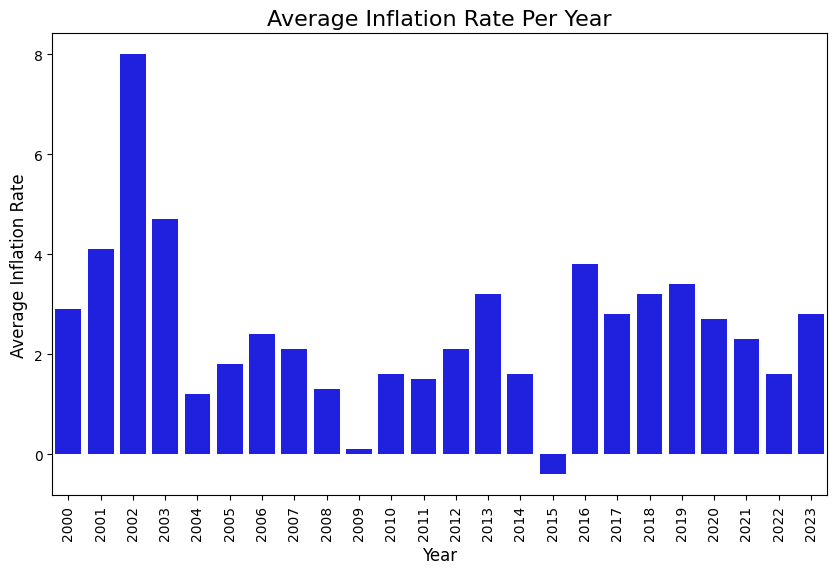
How inflation rate affects Non Durable Medical Products
plt.figure(figsize=(10, 6))
sns.lmplot(data=health, y='Non-Durable_Medical_Products', x='Average_Inflation_Rate')
plt.title('How the Inflation Rate Affects Non Durable Medical Products', fontsize=16)
plt.xlabel('Average Inflation Rate', fontsize=12)
plt.ylabel('Cost', fontsize=12)
plt.show()<Figure size 1000x600 with 0 Axes>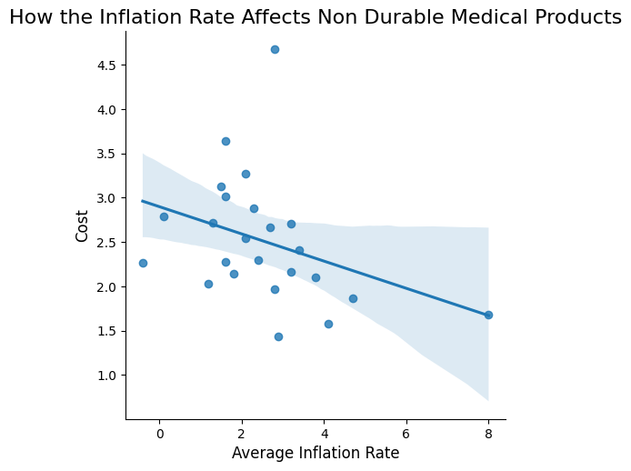
How year affects Retail_Prescription_Drugs
plt.figure(figsize=(10, 6))
sns.barplot(data=health, x='Year', y='Retail_Prescription_Drugs', color='blue')
plt.title('Cost of Retail Prescription Drugs Over Time', fontsize=16)
plt.xlabel('Year', fontsize=12)
plt.xticks(rotation=90)
plt.ylabel('Cost', fontsize=12)
plt.show()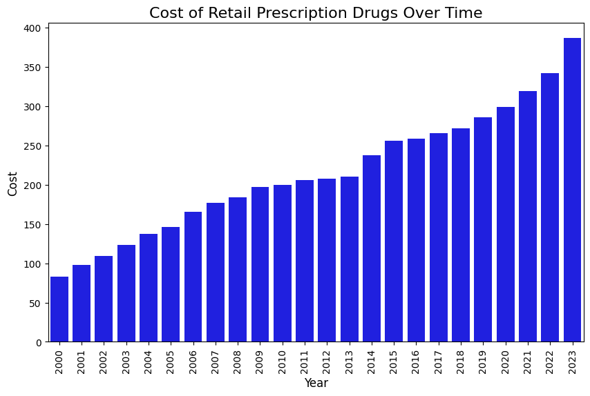
How average inflation rate affects dental
plt.figure(figsize=(10, 6))
sns.lmplot(data=health, y='Home_Health', x='Average_Inflation_Rate')
plt.title('How the Inflation Rate Affects Home Health Costs', fontsize=16)
plt.xlabel('Average Inflation Rate', fontsize=12)
plt.ylabel('Cost', fontsize=12)
plt.show()<Figure size 1000x600 with 0 Axes>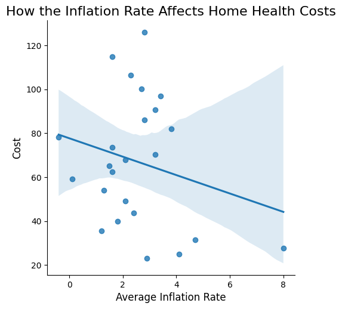
Scatter Plot
plt.figure(figsize=(8, 30))
sns.lmplot(data=health, y="Dental", x="Average_Inflation_Rate")
plt.title("How the Average Inflation Rate Affects Dental Costs")
plt.ylabel("Cost")
plt.xlabel("Average Inflation Rate")
plt.tight_layout()
plt.show()<Figure size 800x3000 with 0 Axes>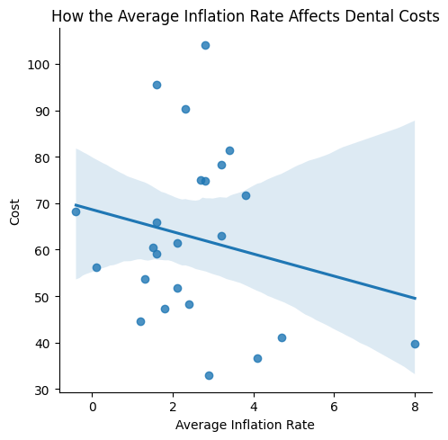
Scatter Plot with Linear Fit of Insurance Coverage vs. Total Spending by Region
plt.figure(figsize=(8, 30))
sns.lmplot(data=health, x="Year", y="Average_Inflation_Rate")
plt.title("Average Inflation Rate Over Time")
plt.xlabel("Year")
plt.ylabel("Average Inflation Rate")
plt.tight_layout()
plt.show()<Figure size 800x3000 with 0 Axes>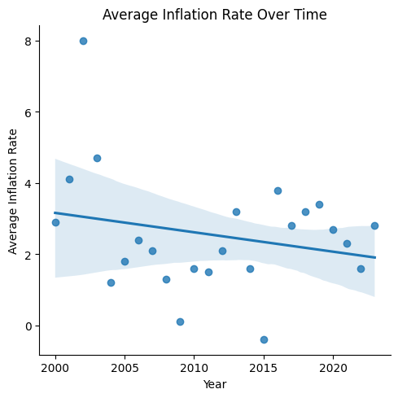
Hospital Bill Costs Per Year
plt.figure(figsize=(8, 30))
sns.lmplot(data=health, x="Year", y="Hospitals")
plt.title("Hospital Costs per Year")
plt.xlabel("Year")
plt.ylabel("Hospital Bill")
plt.tight_layout()
plt.show()<Figure size 800x3000 with 0 Axes>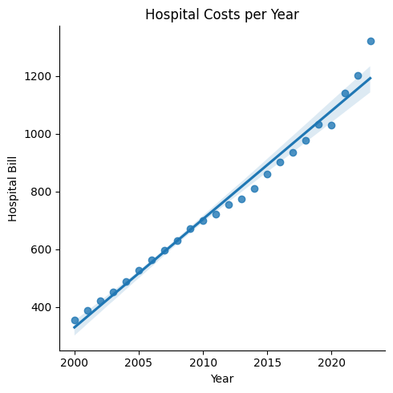
Lasso Linear Regression
/usr/local/lib/python3.11/dist-packages/sklearn/linear_model/_coordinate_descent.py:681: ConvergenceWarning: Objective did not converge. You might want to increase the number of iterations. Duality gap: 0.016313363651590862, tolerance: 0.0023137333333333337
model = cd_fast.enet_coordinate_descent_gram(
/usr/local/lib/python3.11/dist-packages/sklearn/linear_model/_coordinate_descent.py:681: ConvergenceWarning: Objective did not converge. You might want to increase the number of iterations. Duality gap: 0.022296429889799185, tolerance: 0.0023137333333333337
model = cd_fast.enet_coordinate_descent_gram(
/usr/local/lib/python3.11/dist-packages/sklearn/linear_model/_coordinate_descent.py:681: ConvergenceWarning: Objective did not converge. You might want to increase the number of iterations. Duality gap: 0.022783027138238765, tolerance: 0.0023137333333333337
model = cd_fast.enet_coordinate_descent_gram(
/usr/local/lib/python3.11/dist-packages/sklearn/linear_model/_coordinate_descent.py:681: ConvergenceWarning: Objective did not converge. You might want to increase the number of iterations. Duality gap: 0.024569032454252238, tolerance: 0.0023137333333333337
model = cd_fast.enet_coordinate_descent_gram(
/usr/local/lib/python3.11/dist-packages/sklearn/linear_model/_coordinate_descent.py:681: ConvergenceWarning: Objective did not converge. You might want to increase the number of iterations. Duality gap: 0.03198563774421004, tolerance: 0.0023137333333333337
model = cd_fast.enet_coordinate_descent_gram(
/usr/local/lib/python3.11/dist-packages/sklearn/linear_model/_coordinate_descent.py:681: ConvergenceWarning: Objective did not converge. You might want to increase the number of iterations. Duality gap: 0.04399171152379466, tolerance: 0.0023137333333333337
model = cd_fast.enet_coordinate_descent_gram(
/usr/local/lib/python3.11/dist-packages/sklearn/linear_model/_coordinate_descent.py:681: ConvergenceWarning: Objective did not converge. You might want to increase the number of iterations. Duality gap: 0.048151072056187516, tolerance: 0.0023137333333333337
model = cd_fast.enet_coordinate_descent_gram(
/usr/local/lib/python3.11/dist-packages/sklearn/linear_model/_coordinate_descent.py:681: ConvergenceWarning: Objective did not converge. You might want to increase the number of iterations. Duality gap: 0.04886521560852053, tolerance: 0.0023137333333333337
model = cd_fast.enet_coordinate_descent_gram(
/usr/local/lib/python3.11/dist-packages/sklearn/linear_model/_coordinate_descent.py:681: ConvergenceWarning: Objective did not converge. You might want to increase the number of iterations. Duality gap: 0.04858371590674615, tolerance: 0.0023137333333333337
model = cd_fast.enet_coordinate_descent_gram(
/usr/local/lib/python3.11/dist-packages/sklearn/linear_model/_coordinate_descent.py:681: ConvergenceWarning: Objective did not converge. You might want to increase the number of iterations. Duality gap: 0.048059988132973075, tolerance: 0.0023137333333333337
model = cd_fast.enet_coordinate_descent_gram(
/usr/local/lib/python3.11/dist-packages/sklearn/linear_model/_coordinate_descent.py:681: ConvergenceWarning: Objective did not converge. You might want to increase the number of iterations. Duality gap: 0.04748581020619369, tolerance: 0.0023137333333333337
model = cd_fast.enet_coordinate_descent_gram(
/usr/local/lib/python3.11/dist-packages/sklearn/linear_model/_coordinate_descent.py:681: ConvergenceWarning: Objective did not converge. You might want to increase the number of iterations. Duality gap: 0.04690735872092411, tolerance: 0.0023137333333333337
model = cd_fast.enet_coordinate_descent_gram(
/usr/local/lib/python3.11/dist-packages/sklearn/linear_model/_coordinate_descent.py:681: ConvergenceWarning: Objective did not converge. You might want to increase the number of iterations. Duality gap: 0.04633700592574996, tolerance: 0.0023137333333333337
model = cd_fast.enet_coordinate_descent_gram(
/usr/local/lib/python3.11/dist-packages/sklearn/linear_model/_coordinate_descent.py:681: ConvergenceWarning: Objective did not converge. You might want to increase the number of iterations. Duality gap: 0.045779462987693975, tolerance: 0.0023137333333333337
model = cd_fast.enet_coordinate_descent_gram(
/usr/local/lib/python3.11/dist-packages/sklearn/linear_model/_coordinate_descent.py:681: ConvergenceWarning: Objective did not converge. You might want to increase the number of iterations. Duality gap: 0.04523742150378851, tolerance: 0.0023137333333333337
model = cd_fast.enet_coordinate_descent_gram(
/usr/local/lib/python3.11/dist-packages/sklearn/linear_model/_coordinate_descent.py:681: ConvergenceWarning: Objective did not converge. You might want to increase the number of iterations. Duality gap: 0.04471274628339117, tolerance: 0.0023137333333333337
model = cd_fast.enet_coordinate_descent_gram(
/usr/local/lib/python3.11/dist-packages/sklearn/linear_model/_coordinate_descent.py:681: ConvergenceWarning: Objective did not converge. You might want to increase the number of iterations. Duality gap: 0.04420676793295897, tolerance: 0.0023137333333333337
model = cd_fast.enet_coordinate_descent_gram(
/usr/local/lib/python3.11/dist-packages/sklearn/linear_model/_coordinate_descent.py:681: ConvergenceWarning: Objective did not converge. You might want to increase the number of iterations. Duality gap: 0.043720397365429875, tolerance: 0.0023137333333333337
model = cd_fast.enet_coordinate_descent_gram(
/usr/local/lib/python3.11/dist-packages/sklearn/linear_model/_coordinate_descent.py:681: ConvergenceWarning: Objective did not converge. You might want to increase the number of iterations. Duality gap: 0.04325420082011, tolerance: 0.0023137333333333337
model = cd_fast.enet_coordinate_descent_gram(
/usr/local/lib/python3.11/dist-packages/sklearn/linear_model/_coordinate_descent.py:681: ConvergenceWarning: Objective did not converge. You might want to increase the number of iterations. Duality gap: 0.04280846045330122, tolerance: 0.0023137333333333337
model = cd_fast.enet_coordinate_descent_gram(
/usr/local/lib/python3.11/dist-packages/sklearn/linear_model/_coordinate_descent.py:681: ConvergenceWarning: Objective did not converge. You might want to increase the number of iterations. Duality gap: 0.0423832259222543, tolerance: 0.0023137333333333337
model = cd_fast.enet_coordinate_descent_gram(
/usr/local/lib/python3.11/dist-packages/sklearn/linear_model/_coordinate_descent.py:681: ConvergenceWarning: Objective did not converge. You might want to increase the number of iterations. Duality gap: 0.041978356895679525, tolerance: 0.0023137333333333337
model = cd_fast.enet_coordinate_descent_gram(
/usr/local/lib/python3.11/dist-packages/sklearn/linear_model/_coordinate_descent.py:681: ConvergenceWarning: Objective did not converge. You might want to increase the number of iterations. Duality gap: 0.04159356129332892, tolerance: 0.0023137333333333337
model = cd_fast.enet_coordinate_descent_gram(
/usr/local/lib/python3.11/dist-packages/sklearn/linear_model/_coordinate_descent.py:681: ConvergenceWarning: Objective did not converge. You might want to increase the number of iterations. Duality gap: 0.04122842561295137, tolerance: 0.0023137333333333337
model = cd_fast.enet_coordinate_descent_gram(
/usr/local/lib/python3.11/dist-packages/sklearn/linear_model/_coordinate_descent.py:681: ConvergenceWarning: Objective did not converge. You might want to increase the number of iterations. Duality gap: 0.040882442246637396, tolerance: 0.0023137333333333337
model = cd_fast.enet_coordinate_descent_gram(
/usr/local/lib/python3.11/dist-packages/sklearn/linear_model/_coordinate_descent.py:681: ConvergenceWarning: Objective did not converge. You might want to increase the number of iterations. Duality gap: 0.04055503083996115, tolerance: 0.0023137333333333337
model = cd_fast.enet_coordinate_descent_gram(
/usr/local/lib/python3.11/dist-packages/sklearn/linear_model/_coordinate_descent.py:681: ConvergenceWarning: Objective did not converge. You might want to increase the number of iterations. Duality gap: 0.04024555829033538, tolerance: 0.0023137333333333337
model = cd_fast.enet_coordinate_descent_gram(
/usr/local/lib/python3.11/dist-packages/sklearn/linear_model/_coordinate_descent.py:681: ConvergenceWarning: Objective did not converge. You might want to increase the number of iterations. Duality gap: 0.03995335288696822, tolerance: 0.0023137333333333337
model = cd_fast.enet_coordinate_descent_gram(
/usr/local/lib/python3.11/dist-packages/sklearn/linear_model/_coordinate_descent.py:681: ConvergenceWarning: Objective did not converge. You might want to increase the number of iterations. Duality gap: 0.03967771864137326, tolerance: 0.0023137333333333337
model = cd_fast.enet_coordinate_descent_gram(
/usr/local/lib/python3.11/dist-packages/sklearn/linear_model/_coordinate_descent.py:681: ConvergenceWarning: Objective did not converge. You might want to increase the number of iterations. Duality gap: 0.039417945258110265, tolerance: 0.0023137333333333337
model = cd_fast.enet_coordinate_descent_gram(
/usr/local/lib/python3.11/dist-packages/sklearn/linear_model/_coordinate_descent.py:681: ConvergenceWarning: Objective did not converge. You might want to increase the number of iterations. Duality gap: 0.03917331766736609, tolerance: 0.0023137333333333337
model = cd_fast.enet_coordinate_descent_gram(
/usr/local/lib/python3.11/dist-packages/sklearn/linear_model/_coordinate_descent.py:681: ConvergenceWarning: Objective did not converge. You might want to increase the number of iterations. Duality gap: 0.03894312303443037, tolerance: 0.0023137333333333337
model = cd_fast.enet_coordinate_descent_gram(
/usr/local/lib/python3.11/dist-packages/sklearn/linear_model/_coordinate_descent.py:681: ConvergenceWarning: Objective did not converge. You might want to increase the number of iterations. Duality gap: 0.0387266554006267, tolerance: 0.0023137333333333337
model = cd_fast.enet_coordinate_descent_gram(
/usr/local/lib/python3.11/dist-packages/sklearn/linear_model/_coordinate_descent.py:681: ConvergenceWarning: Objective did not converge. You might want to increase the number of iterations. Duality gap: 0.038523223387326055, tolerance: 0.0023137333333333337
model = cd_fast.enet_coordinate_descent_gram(
/usr/local/lib/python3.11/dist-packages/sklearn/linear_model/_coordinate_descent.py:681: ConvergenceWarning: Objective did not converge. You might want to increase the number of iterations. Duality gap: 0.009189791340659781, tolerance: 0.0015876000000000002
model = cd_fast.enet_coordinate_descent_gram(
/usr/local/lib/python3.11/dist-packages/sklearn/linear_model/_coordinate_descent.py:681: ConvergenceWarning: Objective did not converge. You might want to increase the number of iterations. Duality gap: 0.015635652630212604, tolerance: 0.0015876000000000002
model = cd_fast.enet_coordinate_descent_gram(
/usr/local/lib/python3.11/dist-packages/sklearn/linear_model/_coordinate_descent.py:681: ConvergenceWarning: Objective did not converge. You might want to increase the number of iterations. Duality gap: 0.017743569796422776, tolerance: 0.0015876000000000002
model = cd_fast.enet_coordinate_descent_gram(
/usr/local/lib/python3.11/dist-packages/sklearn/linear_model/_coordinate_descent.py:681: ConvergenceWarning: Objective did not converge. You might want to increase the number of iterations. Duality gap: 0.018744296275972516, tolerance: 0.0015876000000000002
model = cd_fast.enet_coordinate_descent_gram(
/usr/local/lib/python3.11/dist-packages/sklearn/linear_model/_coordinate_descent.py:681: ConvergenceWarning: Objective did not converge. You might want to increase the number of iterations. Duality gap: 0.019319575553064183, tolerance: 0.0015876000000000002
model = cd_fast.enet_coordinate_descent_gram(
/usr/local/lib/python3.11/dist-packages/sklearn/linear_model/_coordinate_descent.py:681: ConvergenceWarning: Objective did not converge. You might want to increase the number of iterations. Duality gap: 0.01962976389218163, tolerance: 0.0015876000000000002
model = cd_fast.enet_coordinate_descent_gram(
/usr/local/lib/python3.11/dist-packages/sklearn/linear_model/_coordinate_descent.py:681: ConvergenceWarning: Objective did not converge. You might want to increase the number of iterations. Duality gap: 0.019736755985762855, tolerance: 0.0015876000000000002
model = cd_fast.enet_coordinate_descent_gram(
/usr/local/lib/python3.11/dist-packages/sklearn/linear_model/_coordinate_descent.py:681: ConvergenceWarning: Objective did not converge. You might want to increase the number of iterations. Duality gap: 0.019680436392318867, tolerance: 0.0015876000000000002
model = cd_fast.enet_coordinate_descent_gram(
/usr/local/lib/python3.11/dist-packages/sklearn/linear_model/_coordinate_descent.py:681: ConvergenceWarning: Objective did not converge. You might want to increase the number of iterations. Duality gap: 0.01949255030750585, tolerance: 0.0015876000000000002
model = cd_fast.enet_coordinate_descent_gram(
/usr/local/lib/python3.11/dist-packages/sklearn/linear_model/_coordinate_descent.py:681: ConvergenceWarning: Objective did not converge. You might want to increase the number of iterations. Duality gap: 0.019199662760158276, tolerance: 0.0015876000000000002
model = cd_fast.enet_coordinate_descent_gram(
/usr/local/lib/python3.11/dist-packages/sklearn/linear_model/_coordinate_descent.py:681: ConvergenceWarning: Objective did not converge. You might want to increase the number of iterations. Duality gap: 0.018824187298736916, tolerance: 0.0015876000000000002
model = cd_fast.enet_coordinate_descent_gram(
/usr/local/lib/python3.11/dist-packages/sklearn/linear_model/_coordinate_descent.py:681: ConvergenceWarning: Objective did not converge. You might want to increase the number of iterations. Duality gap: 0.01838502010757992, tolerance: 0.0015876000000000002
model = cd_fast.enet_coordinate_descent_gram(
/usr/local/lib/python3.11/dist-packages/sklearn/linear_model/_coordinate_descent.py:681: ConvergenceWarning: Objective did not converge. You might want to increase the number of iterations. Duality gap: 0.017898046103624665, tolerance: 0.0015876000000000002
model = cd_fast.enet_coordinate_descent_gram(
/usr/local/lib/python3.11/dist-packages/sklearn/linear_model/_coordinate_descent.py:681: ConvergenceWarning: Objective did not converge. You might want to increase the number of iterations. Duality gap: 0.017376569447776546, tolerance: 0.0015876000000000002
model = cd_fast.enet_coordinate_descent_gram(
/usr/local/lib/python3.11/dist-packages/sklearn/linear_model/_coordinate_descent.py:681: ConvergenceWarning: Objective did not converge. You might want to increase the number of iterations. Duality gap: 0.016831684416507287, tolerance: 0.0015876000000000002
model = cd_fast.enet_coordinate_descent_gram(
/usr/local/lib/python3.11/dist-packages/sklearn/linear_model/_coordinate_descent.py:681: ConvergenceWarning: Objective did not converge. You might want to increase the number of iterations. Duality gap: 0.016272595391711775, tolerance: 0.0015876000000000002
model = cd_fast.enet_coordinate_descent_gram(
/usr/local/lib/python3.11/dist-packages/sklearn/linear_model/_coordinate_descent.py:681: ConvergenceWarning: Objective did not converge. You might want to increase the number of iterations. Duality gap: 0.01570689302423922, tolerance: 0.0015876000000000002
model = cd_fast.enet_coordinate_descent_gram(
/usr/local/lib/python3.11/dist-packages/sklearn/linear_model/_coordinate_descent.py:681: ConvergenceWarning: Objective did not converge. You might want to increase the number of iterations. Duality gap: 0.015140792378112167, tolerance: 0.0015876000000000002
model = cd_fast.enet_coordinate_descent_gram(
/usr/local/lib/python3.11/dist-packages/sklearn/linear_model/_coordinate_descent.py:681: ConvergenceWarning: Objective did not converge. You might want to increase the number of iterations. Duality gap: 0.014579338176057277, tolerance: 0.0015876000000000002
model = cd_fast.enet_coordinate_descent_gram(
/usr/local/lib/python3.11/dist-packages/sklearn/linear_model/_coordinate_descent.py:681: ConvergenceWarning: Objective did not converge. You might want to increase the number of iterations. Duality gap: 0.014026581571842556, tolerance: 0.0015876000000000002
model = cd_fast.enet_coordinate_descent_gram(
/usr/local/lib/python3.11/dist-packages/sklearn/linear_model/_coordinate_descent.py:681: ConvergenceWarning: Objective did not converge. You might want to increase the number of iterations. Duality gap: 0.01348573220234961, tolerance: 0.0015876000000000002
model = cd_fast.enet_coordinate_descent_gram(
/usr/local/lib/python3.11/dist-packages/sklearn/linear_model/_coordinate_descent.py:681: ConvergenceWarning: Objective did not converge. You might want to increase the number of iterations. Duality gap: 0.01295928901706489, tolerance: 0.0015876000000000002
model = cd_fast.enet_coordinate_descent_gram(
/usr/local/lib/python3.11/dist-packages/sklearn/linear_model/_coordinate_descent.py:681: ConvergenceWarning: Objective did not converge. You might want to increase the number of iterations. Duality gap: 0.012449152478723136, tolerance: 0.0015876000000000002
model = cd_fast.enet_coordinate_descent_gram(
/usr/local/lib/python3.11/dist-packages/sklearn/linear_model/_coordinate_descent.py:681: ConvergenceWarning: Objective did not converge. You might want to increase the number of iterations. Duality gap: 0.011956721030598416, tolerance: 0.0015876000000000002
model = cd_fast.enet_coordinate_descent_gram(
/usr/local/lib/python3.11/dist-packages/sklearn/linear_model/_coordinate_descent.py:681: ConvergenceWarning: Objective did not converge. You might want to increase the number of iterations. Duality gap: 0.011482973468528002, tolerance: 0.0015876000000000002
model = cd_fast.enet_coordinate_descent_gram(
/usr/local/lib/python3.11/dist-packages/sklearn/linear_model/_coordinate_descent.py:681: ConvergenceWarning: Objective did not converge. You might want to increase the number of iterations. Duality gap: 0.011028539811963611, tolerance: 0.0015876000000000002
model = cd_fast.enet_coordinate_descent_gram(
/usr/local/lib/python3.11/dist-packages/sklearn/linear_model/_coordinate_descent.py:681: ConvergenceWarning: Objective did not converge. You might want to increase the number of iterations. Duality gap: 0.010593761485612418, tolerance: 0.0015876000000000002
model = cd_fast.enet_coordinate_descent_gram(
/usr/local/lib/python3.11/dist-packages/sklearn/linear_model/_coordinate_descent.py:681: ConvergenceWarning: Objective did not converge. You might want to increase the number of iterations. Duality gap: 0.010178742898020232, tolerance: 0.0015876000000000002
model = cd_fast.enet_coordinate_descent_gram(
/usr/local/lib/python3.11/dist-packages/sklearn/linear_model/_coordinate_descent.py:681: ConvergenceWarning: Objective did not converge. You might want to increase the number of iterations. Duality gap: 0.009783395247918492, tolerance: 0.0015876000000000002
model = cd_fast.enet_coordinate_descent_gram(
/usr/local/lib/python3.11/dist-packages/sklearn/linear_model/_coordinate_descent.py:681: ConvergenceWarning: Objective did not converge. You might want to increase the number of iterations. Duality gap: 0.009407473911760889, tolerance: 0.0015876000000000002
model = cd_fast.enet_coordinate_descent_gram(
/usr/local/lib/python3.11/dist-packages/sklearn/linear_model/_coordinate_descent.py:681: ConvergenceWarning: Objective did not converge. You might want to increase the number of iterations. Duality gap: 0.006995299059594728, tolerance: 0.0015876000000000002
model = cd_fast.enet_coordinate_descent_gram(
/usr/local/lib/python3.11/dist-packages/sklearn/linear_model/_coordinate_descent.py:681: ConvergenceWarning: Objective did not converge. You might want to increase the number of iterations. Duality gap: 0.04884630194350237, tolerance: 0.0015876000000000002
model = cd_fast.enet_coordinate_descent_gram(
/usr/local/lib/python3.11/dist-packages/sklearn/linear_model/_coordinate_descent.py:681: ConvergenceWarning: Objective did not converge. You might want to increase the number of iterations. Duality gap: 0.06983748041418636, tolerance: 0.0015876000000000002
model = cd_fast.enet_coordinate_descent_gram(
/usr/local/lib/python3.11/dist-packages/sklearn/linear_model/_coordinate_descent.py:681: ConvergenceWarning: Objective did not converge. You might want to increase the number of iterations. Duality gap: 0.07598142459795021, tolerance: 0.0015876000000000002
model = cd_fast.enet_coordinate_descent_gram(
/usr/local/lib/python3.11/dist-packages/sklearn/linear_model/_coordinate_descent.py:681: ConvergenceWarning: Objective did not converge. You might want to increase the number of iterations. Duality gap: 0.0765229326214012, tolerance: 0.0015876000000000002
model = cd_fast.enet_coordinate_descent_gram(
/usr/local/lib/python3.11/dist-packages/sklearn/linear_model/_coordinate_descent.py:681: ConvergenceWarning: Objective did not converge. You might want to increase the number of iterations. Duality gap: 0.0753343680577796, tolerance: 0.0015876000000000002
model = cd_fast.enet_coordinate_descent_gram(
/usr/local/lib/python3.11/dist-packages/sklearn/linear_model/_coordinate_descent.py:681: ConvergenceWarning: Objective did not converge. You might want to increase the number of iterations. Duality gap: 0.07371833604275935, tolerance: 0.0015876000000000002
model = cd_fast.enet_coordinate_descent_gram(
/usr/local/lib/python3.11/dist-packages/sklearn/linear_model/_coordinate_descent.py:681: ConvergenceWarning: Objective did not converge. You might want to increase the number of iterations. Duality gap: 0.07206271480933957, tolerance: 0.0015876000000000002
model = cd_fast.enet_coordinate_descent_gram(
/usr/local/lib/python3.11/dist-packages/sklearn/linear_model/_coordinate_descent.py:681: ConvergenceWarning: Objective did not converge. You might want to increase the number of iterations. Duality gap: 0.07047064328949126, tolerance: 0.0015876000000000002
model = cd_fast.enet_coordinate_descent_gram(
/usr/local/lib/python3.11/dist-packages/sklearn/linear_model/_coordinate_descent.py:681: ConvergenceWarning: Objective did not converge. You might want to increase the number of iterations. Duality gap: 0.06896457421909297, tolerance: 0.0015876000000000002
model = cd_fast.enet_coordinate_descent_gram(
/usr/local/lib/python3.11/dist-packages/sklearn/linear_model/_coordinate_descent.py:681: ConvergenceWarning: Objective did not converge. You might want to increase the number of iterations. Duality gap: 0.06754608395275952, tolerance: 0.0015876000000000002
model = cd_fast.enet_coordinate_descent_gram(
/usr/local/lib/python3.11/dist-packages/sklearn/linear_model/_coordinate_descent.py:681: ConvergenceWarning: Objective did not converge. You might want to increase the number of iterations. Duality gap: 0.06621193397494274, tolerance: 0.0015876000000000002
model = cd_fast.enet_coordinate_descent_gram(
/usr/local/lib/python3.11/dist-packages/sklearn/linear_model/_coordinate_descent.py:681: ConvergenceWarning: Objective did not converge. You might want to increase the number of iterations. Duality gap: 0.06495798848828116, tolerance: 0.0015876000000000002
model = cd_fast.enet_coordinate_descent_gram(
/usr/local/lib/python3.11/dist-packages/sklearn/linear_model/_coordinate_descent.py:681: ConvergenceWarning: Objective did not converge. You might want to increase the number of iterations. Duality gap: 0.063780089375852, tolerance: 0.0015876000000000002
model = cd_fast.enet_coordinate_descent_gram(
/usr/local/lib/python3.11/dist-packages/sklearn/linear_model/_coordinate_descent.py:681: ConvergenceWarning: Objective did not converge. You might want to increase the number of iterations. Duality gap: 0.0626741958698318, tolerance: 0.0015876000000000002
model = cd_fast.enet_coordinate_descent_gram(
/usr/local/lib/python3.11/dist-packages/sklearn/linear_model/_coordinate_descent.py:681: ConvergenceWarning: Objective did not converge. You might want to increase the number of iterations. Duality gap: 0.06163640553965344, tolerance: 0.0015876000000000002
model = cd_fast.enet_coordinate_descent_gram(
/usr/local/lib/python3.11/dist-packages/sklearn/linear_model/_coordinate_descent.py:681: ConvergenceWarning: Objective did not converge. You might want to increase the number of iterations. Duality gap: 0.060662967612531205, tolerance: 0.0015876000000000002
model = cd_fast.enet_coordinate_descent_gram(
/usr/local/lib/python3.11/dist-packages/sklearn/linear_model/_coordinate_descent.py:681: ConvergenceWarning: Objective did not converge. You might want to increase the number of iterations. Duality gap: 0.059750262529050246, tolerance: 0.0015876000000000002
model = cd_fast.enet_coordinate_descent_gram(
/usr/local/lib/python3.11/dist-packages/sklearn/linear_model/_coordinate_descent.py:681: ConvergenceWarning: Objective did not converge. You might want to increase the number of iterations. Duality gap: 0.058894839074515204, tolerance: 0.0015876000000000002
model = cd_fast.enet_coordinate_descent_gram(
/usr/local/lib/python3.11/dist-packages/sklearn/linear_model/_coordinate_descent.py:681: ConvergenceWarning: Objective did not converge. You might want to increase the number of iterations. Duality gap: 0.0580933843393332, tolerance: 0.0015876000000000002
model = cd_fast.enet_coordinate_descent_gram(
/usr/local/lib/python3.11/dist-packages/sklearn/linear_model/_coordinate_descent.py:681: ConvergenceWarning: Objective did not converge. You might want to increase the number of iterations. Duality gap: 0.057342745704334064, tolerance: 0.0015876000000000002
model = cd_fast.enet_coordinate_descent_gram(
/usr/local/lib/python3.11/dist-packages/sklearn/linear_model/_coordinate_descent.py:681: ConvergenceWarning: Objective did not converge. You might want to increase the number of iterations. Duality gap: 0.05663991147293501, tolerance: 0.0015876000000000002
model = cd_fast.enet_coordinate_descent_gram(
/usr/local/lib/python3.11/dist-packages/sklearn/linear_model/_coordinate_descent.py:681: ConvergenceWarning: Objective did not converge. You might want to increase the number of iterations. Duality gap: 0.05598202066052593, tolerance: 0.0015876000000000002
model = cd_fast.enet_coordinate_descent_gram(
/usr/local/lib/python3.11/dist-packages/sklearn/linear_model/_coordinate_descent.py:681: ConvergenceWarning: Objective did not converge. You might want to increase the number of iterations. Duality gap: 0.0027255476054097727, tolerance: 0.002167733333333333
model = cd_fast.enet_coordinate_descent_gram(
/usr/local/lib/python3.11/dist-packages/sklearn/linear_model/_coordinate_descent.py:681: ConvergenceWarning: Objective did not converge. You might want to increase the number of iterations. Duality gap: 0.0025493527622728607, tolerance: 0.002167733333333333
model = cd_fast.enet_coordinate_descent_gram(
/usr/local/lib/python3.11/dist-packages/sklearn/linear_model/_coordinate_descent.py:681: ConvergenceWarning: Objective did not converge. You might want to increase the number of iterations. Duality gap: 0.0023087973611453094, tolerance: 0.002167733333333333
model = cd_fast.enet_coordinate_descent_gram(
/usr/local/lib/python3.11/dist-packages/sklearn/linear_model/_coordinate_descent.py:681: ConvergenceWarning: Objective did not converge. You might want to increase the number of iterations. Duality gap: 0.00853099538320734, tolerance: 0.002167733333333333
model = cd_fast.enet_coordinate_descent_gram(
/usr/local/lib/python3.11/dist-packages/sklearn/linear_model/_coordinate_descent.py:681: ConvergenceWarning: Objective did not converge. You might want to increase the number of iterations. Duality gap: 0.009105209543060155, tolerance: 0.002167733333333333
model = cd_fast.enet_coordinate_descent_gram(
/usr/local/lib/python3.11/dist-packages/sklearn/linear_model/_coordinate_descent.py:681: ConvergenceWarning: Objective did not converge. You might want to increase the number of iterations. Duality gap: 0.00881646015389137, tolerance: 0.002167733333333333
model = cd_fast.enet_coordinate_descent_gram(
/usr/local/lib/python3.11/dist-packages/sklearn/linear_model/_coordinate_descent.py:681: ConvergenceWarning: Objective did not converge. You might want to increase the number of iterations. Duality gap: 0.008464214981172447, tolerance: 0.002167733333333333
model = cd_fast.enet_coordinate_descent_gram(
/usr/local/lib/python3.11/dist-packages/sklearn/linear_model/_coordinate_descent.py:681: ConvergenceWarning: Objective did not converge. You might want to increase the number of iterations. Duality gap: 0.008118219518996383, tolerance: 0.002167733333333333
model = cd_fast.enet_coordinate_descent_gram(
/usr/local/lib/python3.11/dist-packages/sklearn/linear_model/_coordinate_descent.py:681: ConvergenceWarning: Objective did not converge. You might want to increase the number of iterations. Duality gap: 0.007780198177716358, tolerance: 0.002167733333333333
model = cd_fast.enet_coordinate_descent_gram(
/usr/local/lib/python3.11/dist-packages/sklearn/linear_model/_coordinate_descent.py:681: ConvergenceWarning: Objective did not converge. You might want to increase the number of iterations. Duality gap: 0.007450565938121656, tolerance: 0.002167733333333333
model = cd_fast.enet_coordinate_descent_gram(
/usr/local/lib/python3.11/dist-packages/sklearn/linear_model/_coordinate_descent.py:681: ConvergenceWarning: Objective did not converge. You might want to increase the number of iterations. Duality gap: 0.0071304079766054684, tolerance: 0.002167733333333333
model = cd_fast.enet_coordinate_descent_gram(
/usr/local/lib/python3.11/dist-packages/sklearn/linear_model/_coordinate_descent.py:681: ConvergenceWarning: Objective did not converge. You might want to increase the number of iterations. Duality gap: 0.0068207163262901105, tolerance: 0.002167733333333333
model = cd_fast.enet_coordinate_descent_gram(
/usr/local/lib/python3.11/dist-packages/sklearn/linear_model/_coordinate_descent.py:681: ConvergenceWarning: Objective did not converge. You might want to increase the number of iterations. Duality gap: 0.0065222307260022205, tolerance: 0.002167733333333333
model = cd_fast.enet_coordinate_descent_gram(
/usr/local/lib/python3.11/dist-packages/sklearn/linear_model/_coordinate_descent.py:681: ConvergenceWarning: Objective did not converge. You might want to increase the number of iterations. Duality gap: 0.006235455026374126, tolerance: 0.002167733333333333
model = cd_fast.enet_coordinate_descent_gram(
/usr/local/lib/python3.11/dist-packages/sklearn/linear_model/_coordinate_descent.py:681: ConvergenceWarning: Objective did not converge. You might want to increase the number of iterations. Duality gap: 0.005960695098119473, tolerance: 0.002167733333333333
model = cd_fast.enet_coordinate_descent_gram(
/usr/local/lib/python3.11/dist-packages/sklearn/linear_model/_coordinate_descent.py:681: ConvergenceWarning: Objective did not converge. You might want to increase the number of iterations. Duality gap: 0.005698093521370851, tolerance: 0.002167733333333333
model = cd_fast.enet_coordinate_descent_gram(
/usr/local/lib/python3.11/dist-packages/sklearn/linear_model/_coordinate_descent.py:681: ConvergenceWarning: Objective did not converge. You might want to increase the number of iterations. Duality gap: 0.005447659200365607, tolerance: 0.002167733333333333
model = cd_fast.enet_coordinate_descent_gram(
/usr/local/lib/python3.11/dist-packages/sklearn/linear_model/_coordinate_descent.py:681: ConvergenceWarning: Objective did not converge. You might want to increase the number of iterations. Duality gap: 0.005209292546894062, tolerance: 0.002167733333333333
model = cd_fast.enet_coordinate_descent_gram(
/usr/local/lib/python3.11/dist-packages/sklearn/linear_model/_coordinate_descent.py:681: ConvergenceWarning: Objective did not converge. You might want to increase the number of iterations. Duality gap: 0.0049828068471917675, tolerance: 0.002167733333333333
model = cd_fast.enet_coordinate_descent_gram(
/usr/local/lib/python3.11/dist-packages/sklearn/linear_model/_coordinate_descent.py:681: ConvergenceWarning: Objective did not converge. You might want to increase the number of iterations. Duality gap: 0.004767946357853603, tolerance: 0.002167733333333333
model = cd_fast.enet_coordinate_descent_gram(
/usr/local/lib/python3.11/dist-packages/sklearn/linear_model/_coordinate_descent.py:681: ConvergenceWarning: Objective did not converge. You might want to increase the number of iterations. Duality gap: 0.004564401592523026, tolerance: 0.002167733333333333
model = cd_fast.enet_coordinate_descent_gram(
/usr/local/lib/python3.11/dist-packages/sklearn/linear_model/_coordinate_descent.py:681: ConvergenceWarning: Objective did not converge. You might want to increase the number of iterations. Duality gap: 0.0043718221592659035, tolerance: 0.002167733333333333
model = cd_fast.enet_coordinate_descent_gram(
/usr/local/lib/python3.11/dist-packages/sklearn/linear_model/_coordinate_descent.py:681: ConvergenceWarning: Objective did not converge. You might want to increase the number of iterations. Duality gap: 0.004189827608424679, tolerance: 0.002167733333333333
model = cd_fast.enet_coordinate_descent_gram(
/usr/local/lib/python3.11/dist-packages/sklearn/linear_model/_coordinate_descent.py:681: ConvergenceWarning: Objective did not converge. You might want to increase the number of iterations. Duality gap: 0.004018016409204961, tolerance: 0.002167733333333333
model = cd_fast.enet_coordinate_descent_gram(
/usr/local/lib/python3.11/dist-packages/sklearn/linear_model/_coordinate_descent.py:681: ConvergenceWarning: Objective did not converge. You might want to increase the number of iterations. Duality gap: 0.003855973487507214, tolerance: 0.002167733333333333
model = cd_fast.enet_coordinate_descent_gram(
/usr/local/lib/python3.11/dist-packages/sklearn/linear_model/_coordinate_descent.py:681: ConvergenceWarning: Objective did not converge. You might want to increase the number of iterations. Duality gap: 0.003703276421566315, tolerance: 0.002167733333333333
model = cd_fast.enet_coordinate_descent_gram(
/usr/local/lib/python3.11/dist-packages/sklearn/linear_model/_coordinate_descent.py:681: ConvergenceWarning: Objective did not converge. You might want to increase the number of iterations. Duality gap: 0.003559500496693957, tolerance: 0.002167733333333333
model = cd_fast.enet_coordinate_descent_gram(
/usr/local/lib/python3.11/dist-packages/sklearn/linear_model/_coordinate_descent.py:681: ConvergenceWarning: Objective did not converge. You might want to increase the number of iterations. Duality gap: 0.003424222924900633, tolerance: 0.002167733333333333
model = cd_fast.enet_coordinate_descent_gram(
/usr/local/lib/python3.11/dist-packages/sklearn/linear_model/_coordinate_descent.py:681: ConvergenceWarning: Objective did not converge. You might want to increase the number of iterations. Duality gap: 0.003297026154033489, tolerance: 0.002167733333333333
model = cd_fast.enet_coordinate_descent_gram(
/usr/local/lib/python3.11/dist-packages/sklearn/linear_model/_coordinate_descent.py:681: ConvergenceWarning: Objective did not converge. You might want to increase the number of iterations. Duality gap: 0.0031775005748144736, tolerance: 0.002167733333333333
model = cd_fast.enet_coordinate_descent_gram(
/usr/local/lib/python3.11/dist-packages/sklearn/linear_model/_coordinate_descent.py:681: ConvergenceWarning: Objective did not converge. You might want to increase the number of iterations. Duality gap: 0.003065246587111048, tolerance: 0.002167733333333333
model = cd_fast.enet_coordinate_descent_gram(
/usr/local/lib/python3.11/dist-packages/sklearn/linear_model/_coordinate_descent.py:681: ConvergenceWarning: Objective did not converge. You might want to increase the number of iterations. Duality gap: 0.002959876226306335, tolerance: 0.002167733333333333
model = cd_fast.enet_coordinate_descent_gram(
/usr/local/lib/python3.11/dist-packages/sklearn/linear_model/_coordinate_descent.py:681: ConvergenceWarning: Objective did not converge. You might want to increase the number of iterations. Duality gap: 0.0028610143818585954, tolerance: 0.002167733333333333
model = cd_fast.enet_coordinate_descent_gram(
/usr/local/lib/python3.11/dist-packages/sklearn/linear_model/_coordinate_descent.py:681: ConvergenceWarning: Objective did not converge. You might want to increase the number of iterations. Duality gap: 0.0027682996520592695, tolerance: 0.002167733333333333
model = cd_fast.enet_coordinate_descent_gram(
/usr/local/lib/python3.11/dist-packages/sklearn/linear_model/_coordinate_descent.py:681: ConvergenceWarning: Objective did not converge. You might want to increase the number of iterations. Duality gap: 0.002681384934199116, tolerance: 0.002167733333333333
model = cd_fast.enet_coordinate_descent_gram(
/usr/local/lib/python3.11/dist-packages/sklearn/linear_model/_coordinate_descent.py:681: ConvergenceWarning: Objective did not converge. You might want to increase the number of iterations. Duality gap: 0.0025999377584930983, tolerance: 0.002167733333333333
model = cd_fast.enet_coordinate_descent_gram(
/usr/local/lib/python3.11/dist-packages/sklearn/linear_model/_coordinate_descent.py:681: ConvergenceWarning: Objective did not converge. You might want to increase the number of iterations. Duality gap: 0.002523640461108201, tolerance: 0.002167733333333333
model = cd_fast.enet_coordinate_descent_gram(
/usr/local/lib/python3.11/dist-packages/sklearn/linear_model/_coordinate_descent.py:681: ConvergenceWarning: Objective did not converge. You might want to increase the number of iterations. Duality gap: 0.0024521901550116354, tolerance: 0.002167733333333333
model = cd_fast.enet_coordinate_descent_gram(
/usr/local/lib/python3.11/dist-packages/sklearn/linear_model/_coordinate_descent.py:681: ConvergenceWarning: Objective did not converge. You might want to increase the number of iterations. Duality gap: 0.002385298632557209, tolerance: 0.002167733333333333
model = cd_fast.enet_coordinate_descent_gram(
/usr/local/lib/python3.11/dist-packages/sklearn/linear_model/_coordinate_descent.py:681: ConvergenceWarning: Objective did not converge. You might want to increase the number of iterations. Duality gap: 0.0023226920754702007, tolerance: 0.002167733333333333
model = cd_fast.enet_coordinate_descent_gram(
/usr/local/lib/python3.11/dist-packages/sklearn/linear_model/_coordinate_descent.py:681: ConvergenceWarning: Objective did not converge. You might want to increase the number of iterations. Duality gap: 0.012976058448298744, tolerance: 0.0025259375
model = cd_fast.enet_coordinate_descent_gram(
/usr/local/lib/python3.11/dist-packages/sklearn/linear_model/_coordinate_descent.py:681: ConvergenceWarning: Objective did not converge. You might want to increase the number of iterations. Duality gap: 0.020857043665358788, tolerance: 0.0025259375
model = cd_fast.enet_coordinate_descent_gram(
/usr/local/lib/python3.11/dist-packages/sklearn/linear_model/_coordinate_descent.py:681: ConvergenceWarning: Objective did not converge. You might want to increase the number of iterations. Duality gap: 0.021133227367075236, tolerance: 0.0025259375
model = cd_fast.enet_coordinate_descent_gram(
/usr/local/lib/python3.11/dist-packages/sklearn/linear_model/_coordinate_descent.py:681: ConvergenceWarning: Objective did not converge. You might want to increase the number of iterations. Duality gap: 0.020531934444292688, tolerance: 0.0025259375
model = cd_fast.enet_coordinate_descent_gram(
/usr/local/lib/python3.11/dist-packages/sklearn/linear_model/_coordinate_descent.py:681: ConvergenceWarning: Objective did not converge. You might want to increase the number of iterations. Duality gap: 0.019815023120742126, tolerance: 0.0025259375
model = cd_fast.enet_coordinate_descent_gram(
/usr/local/lib/python3.11/dist-packages/sklearn/linear_model/_coordinate_descent.py:681: ConvergenceWarning: Objective did not converge. You might want to increase the number of iterations. Duality gap: 0.019073901556629025, tolerance: 0.0025259375
model = cd_fast.enet_coordinate_descent_gram(
/usr/local/lib/python3.11/dist-packages/sklearn/linear_model/_coordinate_descent.py:681: ConvergenceWarning: Objective did not converge. You might want to increase the number of iterations. Duality gap: 0.019207169840008476, tolerance: 0.0025259375
model = cd_fast.enet_coordinate_descent_gram(
/usr/local/lib/python3.11/dist-packages/sklearn/linear_model/_coordinate_descent.py:681: ConvergenceWarning: Objective did not converge. You might want to increase the number of iterations. Duality gap: 0.03794301586673399, tolerance: 0.0025259375
model = cd_fast.enet_coordinate_descent_gram(
/usr/local/lib/python3.11/dist-packages/sklearn/linear_model/_coordinate_descent.py:681: ConvergenceWarning: Objective did not converge. You might want to increase the number of iterations. Duality gap: 0.03427810888565119, tolerance: 0.0025259375
model = cd_fast.enet_coordinate_descent_gram(
/usr/local/lib/python3.11/dist-packages/sklearn/linear_model/_coordinate_descent.py:681: ConvergenceWarning: Objective did not converge. You might want to increase the number of iterations. Duality gap: 0.032436284961276485, tolerance: 0.0025259375
model = cd_fast.enet_coordinate_descent_gram(
/usr/local/lib/python3.11/dist-packages/sklearn/linear_model/_coordinate_descent.py:681: ConvergenceWarning: Objective did not converge. You might want to increase the number of iterations. Duality gap: 0.03115194908926, tolerance: 0.0025259375
model = cd_fast.enet_coordinate_descent_gram(
/usr/local/lib/python3.11/dist-packages/sklearn/linear_model/_coordinate_descent.py:681: ConvergenceWarning: Objective did not converge. You might want to increase the number of iterations. Duality gap: 0.02991830499647996, tolerance: 0.0025259375
model = cd_fast.enet_coordinate_descent_gram(
/usr/local/lib/python3.11/dist-packages/sklearn/linear_model/_coordinate_descent.py:681: ConvergenceWarning: Objective did not converge. You might want to increase the number of iterations. Duality gap: 0.028694825110710198, tolerance: 0.0025259375
model = cd_fast.enet_coordinate_descent_gram(
/usr/local/lib/python3.11/dist-packages/sklearn/linear_model/_coordinate_descent.py:681: ConvergenceWarning: Objective did not converge. You might want to increase the number of iterations. Duality gap: 0.02749052888575676, tolerance: 0.0025259375
model = cd_fast.enet_coordinate_descent_gram(
/usr/local/lib/python3.11/dist-packages/sklearn/linear_model/_coordinate_descent.py:681: ConvergenceWarning: Objective did not converge. You might want to increase the number of iterations. Duality gap: 0.026312969189270063, tolerance: 0.0025259375
model = cd_fast.enet_coordinate_descent_gram(
/usr/local/lib/python3.11/dist-packages/sklearn/linear_model/_coordinate_descent.py:681: ConvergenceWarning: Objective did not converge. You might want to increase the number of iterations. Duality gap: 0.025167510409231042, tolerance: 0.0025259375
model = cd_fast.enet_coordinate_descent_gram(
/usr/local/lib/python3.11/dist-packages/sklearn/linear_model/_coordinate_descent.py:681: ConvergenceWarning: Objective did not converge. You might want to increase the number of iterations. Duality gap: 0.02405814678021123, tolerance: 0.0025259375
model = cd_fast.enet_coordinate_descent_gram(
/usr/local/lib/python3.11/dist-packages/sklearn/linear_model/_coordinate_descent.py:681: ConvergenceWarning: Objective did not converge. You might want to increase the number of iterations. Duality gap: 0.022987798788049574, tolerance: 0.0025259375
model = cd_fast.enet_coordinate_descent_gram(
/usr/local/lib/python3.11/dist-packages/sklearn/linear_model/_coordinate_descent.py:681: ConvergenceWarning: Objective did not converge. You might want to increase the number of iterations. Duality gap: 0.021958493466591733, tolerance: 0.0025259375
model = cd_fast.enet_coordinate_descent_gram(
/usr/local/lib/python3.11/dist-packages/sklearn/linear_model/_coordinate_descent.py:681: ConvergenceWarning: Objective did not converge. You might want to increase the number of iterations. Duality gap: 0.02097151487769544, tolerance: 0.0025259375
model = cd_fast.enet_coordinate_descent_gram(
/usr/local/lib/python3.11/dist-packages/sklearn/linear_model/_coordinate_descent.py:681: ConvergenceWarning: Objective did not converge. You might want to increase the number of iterations. Duality gap: 0.02002753297989912, tolerance: 0.0025259375
model = cd_fast.enet_coordinate_descent_gram(
/usr/local/lib/python3.11/dist-packages/sklearn/linear_model/_coordinate_descent.py:681: ConvergenceWarning: Objective did not converge. You might want to increase the number of iterations. Duality gap: 0.0191267136882729, tolerance: 0.0025259375
model = cd_fast.enet_coordinate_descent_gram(
/usr/local/lib/python3.11/dist-packages/sklearn/linear_model/_coordinate_descent.py:681: ConvergenceWarning: Objective did not converge. You might want to increase the number of iterations. Duality gap: 0.018268812814513424, tolerance: 0.0025259375
model = cd_fast.enet_coordinate_descent_gram(
/usr/local/lib/python3.11/dist-packages/sklearn/linear_model/_coordinate_descent.py:681: ConvergenceWarning: Objective did not converge. You might want to increase the number of iterations. Duality gap: 0.01745325541752507, tolerance: 0.0025259375
model = cd_fast.enet_coordinate_descent_gram(
/usr/local/lib/python3.11/dist-packages/sklearn/linear_model/_coordinate_descent.py:681: ConvergenceWarning: Objective did not converge. You might want to increase the number of iterations. Duality gap: 0.016679203518000563, tolerance: 0.0025259375
model = cd_fast.enet_coordinate_descent_gram(
/usr/local/lib/python3.11/dist-packages/sklearn/linear_model/_coordinate_descent.py:681: ConvergenceWarning: Objective did not converge. You might want to increase the number of iterations. Duality gap: 0.015945612973807144, tolerance: 0.0025259375
model = cd_fast.enet_coordinate_descent_gram(
/usr/local/lib/python3.11/dist-packages/sklearn/linear_model/_coordinate_descent.py:681: ConvergenceWarning: Objective did not converge. You might want to increase the number of iterations. Duality gap: 0.01525128168755252, tolerance: 0.0025259375
model = cd_fast.enet_coordinate_descent_gram(
/usr/local/lib/python3.11/dist-packages/sklearn/linear_model/_coordinate_descent.py:681: ConvergenceWarning: Objective did not converge. You might want to increase the number of iterations. Duality gap: 0.014594889983154502, tolerance: 0.0025259375
model = cd_fast.enet_coordinate_descent_gram(
/usr/local/lib/python3.11/dist-packages/sklearn/linear_model/_coordinate_descent.py:681: ConvergenceWarning: Objective did not converge. You might want to increase the number of iterations. Duality gap: 0.013975034358077565, tolerance: 0.0025259375
model = cd_fast.enet_coordinate_descent_gram(
/usr/local/lib/python3.11/dist-packages/sklearn/linear_model/_coordinate_descent.py:681: ConvergenceWarning: Objective did not converge. You might want to increase the number of iterations. Duality gap: 0.013390255689232688, tolerance: 0.0025259375
model = cd_fast.enet_coordinate_descent_gram(
/usr/local/lib/python3.11/dist-packages/sklearn/linear_model/_coordinate_descent.py:681: ConvergenceWarning: Objective did not converge. You might want to increase the number of iterations. Duality gap: 0.012839062467447704, tolerance: 0.0025259375
model = cd_fast.enet_coordinate_descent_gram(
/usr/local/lib/python3.11/dist-packages/sklearn/linear_model/_coordinate_descent.py:681: ConvergenceWarning: Objective did not converge. You might want to increase the number of iterations. Duality gap: 0.012319950076479458, tolerance: 0.0025259375
model = cd_fast.enet_coordinate_descent_gram(
/usr/local/lib/python3.11/dist-packages/sklearn/linear_model/_coordinate_descent.py:681: ConvergenceWarning: Objective did not converge. You might want to increase the number of iterations. Duality gap: 0.011831416471315137, tolerance: 0.0025259375
model = cd_fast.enet_coordinate_descent_gram(
/usr/local/lib/python3.11/dist-packages/sklearn/linear_model/_coordinate_descent.py:681: ConvergenceWarning: Objective did not converge. You might want to increase the number of iterations. Duality gap: 0.01137197485337893, tolerance: 0.0025259375
model = cd_fast.enet_coordinate_descent_gram(
/usr/local/lib/python3.11/dist-packages/sklearn/linear_model/_coordinate_descent.py:681: ConvergenceWarning: Objective did not converge. You might want to increase the number of iterations. Duality gap: 0.01094016375363438, tolerance: 0.0025259375
model = cd_fast.enet_coordinate_descent_gram(
/usr/local/lib/python3.11/dist-packages/sklearn/linear_model/_coordinate_descent.py:681: ConvergenceWarning: Objective did not converge. You might want to increase the number of iterations. Duality gap: 0.010534555358070463, tolerance: 0.0025259375
model = cd_fast.enet_coordinate_descent_gram(
/usr/local/lib/python3.11/dist-packages/sklearn/linear_model/_coordinate_descent.py:681: ConvergenceWarning: Objective did not converge. You might want to increase the number of iterations. Duality gap: 0.010153761423692842, tolerance: 0.0025259375
model = cd_fast.enet_coordinate_descent_gram(
/usr/local/lib/python3.11/dist-packages/sklearn/linear_model/_coordinate_descent.py:681: ConvergenceWarning: Objective did not converge. You might want to increase the number of iterations. Duality gap: 0.009796437988304874, tolerance: 0.0025259375
model = cd_fast.enet_coordinate_descent_gram(
/usr/local/lib/python3.11/dist-packages/sklearn/linear_model/_coordinate_descent.py:681: ConvergenceWarning: Objective did not converge. You might want to increase the number of iterations. Duality gap: 0.009461288992291372, tolerance: 0.0025259375
model = cd_fast.enet_coordinate_descent_gram(
/usr/local/lib/python3.11/dist-packages/sklearn/linear_model/_coordinate_descent.py:681: ConvergenceWarning: Objective did not converge. You might want to increase the number of iterations. Duality gap: 0.009147068435357397, tolerance: 0.0025259375
model = cd_fast.enet_coordinate_descent_gram(
/usr/local/lib/python3.11/dist-packages/sklearn/linear_model/_coordinate_descent.py:681: ConvergenceWarning: Objective did not converge. You might want to increase the number of iterations. Duality gap: 0.008852582009966525, tolerance: 0.0025259375
model = cd_fast.enet_coordinate_descent_gram(
/usr/local/lib/python3.11/dist-packages/sklearn/linear_model/_coordinate_descent.py:681: ConvergenceWarning: Objective did not converge. You might want to increase the number of iterations. Duality gap: 0.008576687691691731, tolerance: 0.0025259375
model = cd_fast.enet_coordinate_descent_gram(
/usr/local/lib/python3.11/dist-packages/sklearn/linear_model/_coordinate_descent.py:681: ConvergenceWarning: Objective did not converge. You might want to increase the number of iterations. Duality gap: 0.00831829582451249, tolerance: 0.0025259375
model = cd_fast.enet_coordinate_descent_gram(
/usr/local/lib/python3.11/dist-packages/sklearn/linear_model/_coordinate_descent.py:681: ConvergenceWarning: Objective did not converge. You might want to increase the number of iterations. Duality gap: 0.0080763691725938, tolerance: 0.0025259375
model = cd_fast.enet_coordinate_descent_gram(
/usr/local/lib/python3.11/dist-packages/sklearn/linear_model/_coordinate_descent.py:681: ConvergenceWarning: Objective did not converge. You might want to increase the number of iterations. Duality gap: 0.00784992166752474, tolerance: 0.0025259375
model = cd_fast.enet_coordinate_descent_gram(y_pred = lasso_model.predict(X_test)
mse = mean_squared_error(y_test, y_pred)
r2 = r2_score(y_test, y_pred)
y_pred
mse5.3477589056224595print("Lasso Regression Model Evaluation:")
print(f"Mean Squared Error (MSE): {mse:.2f}")
print(f"R² Score: {r2:.2f}")Lasso Regression Model Evaluation:
Mean Squared Error (MSE): 5.35
R² Score: 0.25Regression Tree and Prunned Regression tree
# In scikit-learn, we can use min_impurity_decrease=0.005 for a similar effect.
tree_model = DecisionTreeRegressor(min_impurity_decrease=0.005, random_state=42)
# Fit the model using all predictors (all columns except 'medv')
tree_model.fit(X_train, y_train)
# Predict on training and test sets
y_train_pred = tree_model.predict(X_train)
y_test_pred = tree_model.predict(X_test)
# Calculate MSE
mse_train = mean_squared_error(y_train, y_train_pred)
mse_test = mean_squared_error(y_test, y_test_pred)
# Print the results
print(f"Training MSE: {mse_train:.3f}")
print(f"Test MSE: {mse_test:.3f}")
# Plot the initial regression tree
plt.figure(figsize=(12, 8), dpi = 300)
plot_tree(tree_model, feature_names=X_train.columns, filled=True, rounded=True)
plt.title("Regression Tree for Health")
plt.show()Training MSE: 0.006
Test MSE: 4.040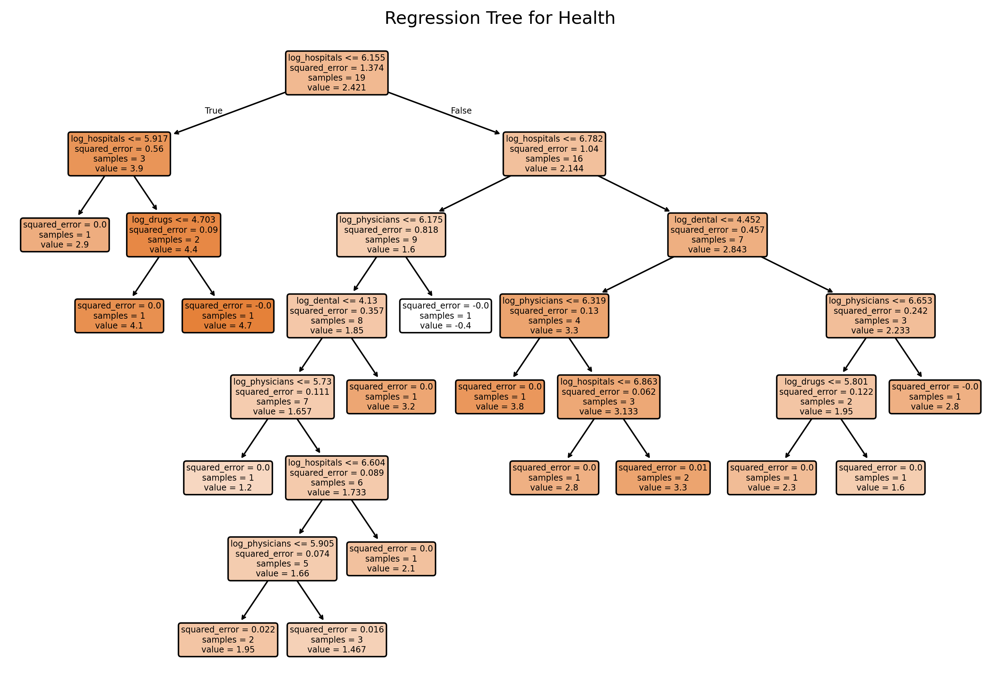
# Prepping training and test data
dtrain_pd = dtrain.toPandas()
dtest_pd = dtest.toPandas()
X_train = dtrain_pd[conti_cols]
X_test = dtest_pd[conti_cols]
y_train = dtrain_pd['Average_Inflation_Rate']
y_test = dtest_pd['Average_Inflation_Rate']
# Without max_depth=3
tree_model = DecisionTreeRegressor(min_impurity_decrease=0.005, random_state=42)
tree_model.fit(X_train, y_train)
# Plot the initial regression tree
plt.figure(figsize=(16, 12), dpi=300)
plot_tree(tree_model, feature_names=X_train.columns, filled=True, rounded=True)
plt.title("Regression Tree for Average_Inflation_Rate (Initial Fit)")
plt.show()# Obtain the cost-complexity pruning path from the initial tree
path = tree_model.cost_complexity_pruning_path(X_train, y_train) # Get candidate ccp_alpha values and corresponding impurities
ccp_alphas = path.ccp_alphas # Candidate pruning parameters (alpha values)
impurities = path.impurities # Impurity values at each candidate alpha
# Exclude the maximum alpha value to avoid the trivial tree (a tree with only the root)
ccp_alphas = ccp_alphas[:-1] # Remove the last alpha value which would prune the tree to a single node
# Set up 10-fold cross-validation
kf = KFold(n_splits=10, shuffle=True, random_state=42) # Initialize 10-fold CV with shuffling and fixed random state
cv_scores = [] # List to store mean cross-validated scores (negative MSE)
leaf_nodes = [] # List to record the number of leaves for each pruned tree
# Loop over each candidate alpha value to evaluate its performance
for ccp_alpha in ccp_alphas:
# Create a DecisionTreeRegressor with the current ccp_alpha and other specified parameters
clf = DecisionTreeRegressor(random_state=42,
ccp_alpha=ccp_alpha,
min_impurity_decrease=0.005)
# Perform 10-fold cross-validation and compute negative mean squared error (MSE)
scores = cross_val_score(clf, X_train, y_train,
cv=kf, scoring="neg_mean_squared_error")
cv_scores.append(np.mean(scores)) # Append the mean CV score for the current alpha
# Fit the tree on the training data to record additional metrics
clf.fit(X_train, y_train)
leaf_nodes.append(clf.get_n_leaves()) # Record the number of leaf nodes in the tree
# Select the best alpha based on the highest (least negative) mean CV score
best_alpha = ccp_alphas[np.argmax(cv_scores)] # Identify the alpha with the best CV performance
print("Best alpha:", best_alpha) # Print the best alpha value
# Train the final pruned tree using the best alpha found
final_tree = DecisionTreeRegressor(random_state=42,
ccp_alpha=best_alpha,
min_impurity_decrease=0.005)
final_tree.fit(X_train, y_train) # Fit the final model on the training data
path = tree_model.cost_complexity_pruning_path(X_train, y_train) # Get candidate ccp_alpha values and corresponding impurities
ccp_alphas = path.ccp_alphas # Candidate pruning parameters (alpha values)
impurities = path.impurities # Impurity values at each candidate alpha
# Exclude the maximum alpha value to avoid the trivial tree (a tree with only the root)
# Remove the last alpha value which would prune the tree to a single node
ccp_alphas = ccp_alphas[:-1]
kf = KFold(n_splits=10, shuffle=True, random_state=42)
cv_scores = [] # mean CV scores (negative MSE)
leaf_nodes = []
sse = []
# Loop over each candidate alpha value to evaluate its performance
for ccp_alpha in ccp_alphas:
# Create a DecisionTreeRegressor with the current ccp_alpha and other specified parameters
clf = DecisionTreeRegressor(random_state=42,
ccp_alpha=ccp_alpha,
min_impurity_decrease=0.005)
# Perform 10-fold cross-validation and compute negative mean squared error (MSE)
scores = cross_val_score(clf, X_train, y_train,
cv=kf, scoring="neg_mean_squared_error")
cv_scores.append(np.mean(scores)) # Append the mean CV score for the current alpha
# Fit the tree on the training data to record additional metrics
clf.fit(X_train, y_train)
leaf_nodes.append(clf.get_n_leaves()) # Record the number of leaf nodes in the tree
# Compute SSE (sum of squared errors) on the training set
preds = clf.predict(X_train) # Predict target values on training data
sse.append(np.sum((y_train - preds) ** 2)) # Calculate and record SSE for training set
# Select the best alpha based on the highest (least negative) mean CV score
best_alpha = ccp_alphas[np.argmax(cv_scores)] # Identify the alpha with the best CV performance
print("Best alpha:", best_alpha) # Print the best alpha value
# Train the final pruned tree using the best alpha found
final_tree = DecisionTreeRegressor(random_state=42,
ccp_alpha=best_alpha,
min_impurity_decrease=0.005)
final_tree.fit(X_train, y_train) # Fit the final model on the training dataBest alpha: 0.23684210526315772
Best alpha: 0.23684210526315772DecisionTreeRegressor(ccp_alpha=np.float64(0.23684210526315772),
min_impurity_decrease=0.005, random_state=42)In a Jupyter environment, please rerun this cell to show the HTML representation or trust the notebook. DecisionTreeRegressor(ccp_alpha=np.float64(0.23684210526315772),
min_impurity_decrease=0.005, random_state=42)# Plot the average cross-validated MSE against the number of leaf nodes
negative_cv_scores = -np.array(cv_scores)
plt.figure(figsize=(8, 6), dpi=150)
plt.plot(leaf_nodes, negative_cv_scores, marker='o', linestyle='-')
plt.axvline(x=final_tree.get_n_leaves(), color='red', linestyle='--', label='Leaf Nodes = 21') # Add vertical line at 21 leaf nodes
plt.xlabel("Number of Leaf Nodes")
plt.ylabel("Mean CV MSE")
plt.title("CV Error vs. Number of Leaf Nodes")
plt.grid(True)
plt.show()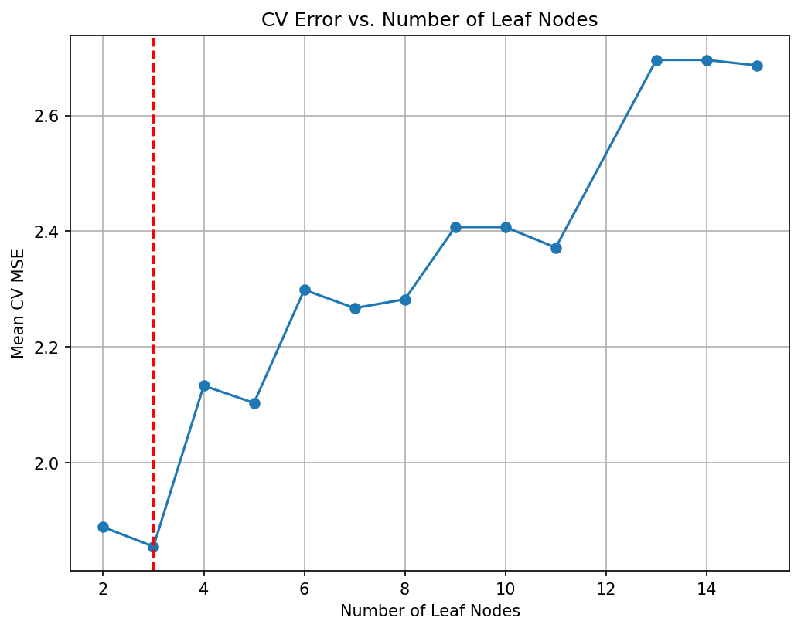
# Plot the SSE on the training against the number of leaf nodes
plt.figure(figsize=(8, 6), dpi=150)
plt.plot(leaf_nodes, sse, marker='o', linestyle='-')
plt.xlabel("Number of Leaf Nodes")
plt.ylabel("SSE")
plt.title("SSE vs. Number of Leaf Nodes")
plt.grid(True)
plt.show()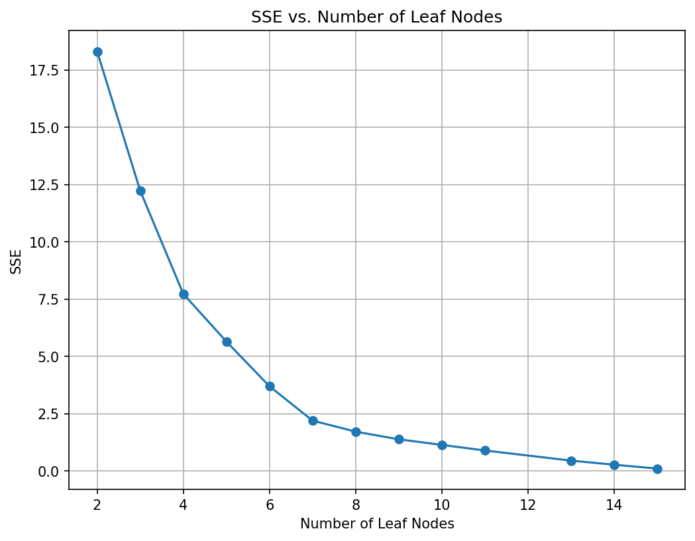
Random Forest
# Build the Random Forest model
# max_features=13 means that at each split the algorithm randomly considers 13 predictors.
rf = RandomForestRegressor(max_features=13, # Use 13 features at each split
n_estimators=500, # Number of trees in the forest
random_state=42,
oob_score=True) # Use out-of-bag samples to estimate error
rf.fit(X_train, y_train)
# Print the model details
print("Random Forest Model:")
print(rf)
# Output the model details (feature importances, OOB score, etc.)
#print("Dental:", rf.dental_score_) # A rough estimate of generalization error
# Generate predictions on training and testing sets
y_train_pred = rf.predict(X_train)
y_test_pred = rf.predict(X_test)
# Calculate Mean Squared Errors (MSE) for both sets
train_mse = mean_squared_error(y_train, y_train_pred)
test_mse = mean_squared_error(y_test, y_test_pred)
print("Train MSE:", train_mse)
print("Test MSE:", test_mse)
#Plot predicted vs. observed values for test data
plt.figure(figsize=(8,6), dpi=300)
plt.scatter(y_test, y_test_pred, alpha=0.7)
plt.plot([min(y_test), max(y_test)], [min(y_test), max(y_test)], 'r--')
plt.xlabel("Year")
plt.ylabel("Dental Cost")
plt.title("Random Forest: Year vs. Dental Cost")
plt.show()Random Forest Model:
RandomForestRegressor(max_features=13, n_estimators=500, oob_score=True,
random_state=42)
Train MSE: 0.284798288421054
Test MSE: 3.4183904159999927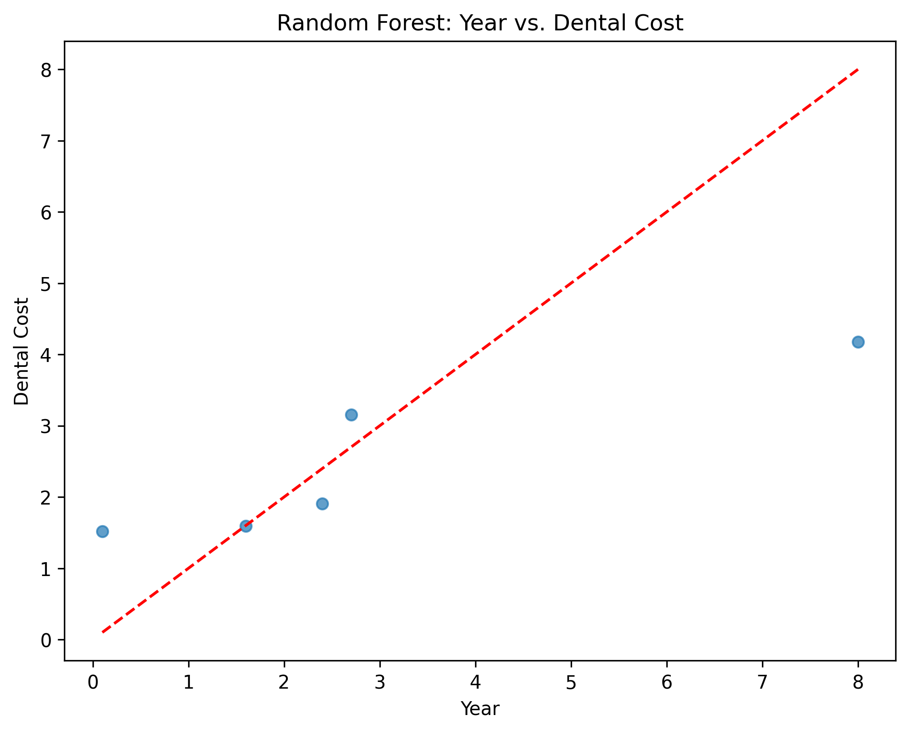
###Homework 5 Parts
Density Plots
vars_to_use = ['Year','Average_Inflation_Rate','Hospitals','Physicians_and_Clinics','Dental','Non-Durable_Medical_Products',
'Other_Professional_Services','Retail_Prescription_Drugs','Home_Health','Nursing_Care','Other_Health_and_Residential',
'Health_Consumption','Personal_Health_Care','Durable_Medical_Equipment','State_and_Local_Administration',
'Total_Administration','Federal_Administration','Net_Cost_of_Health_Insurance','Total_National_Health_Expenditures']
scaler = StandardScaler()
# computes those means and standard deviations on your selected columns
# and returns a NumPy array (`pmatrix`)
# where each column now has mean 0 and variance 1.
pmatrix = scaler.fit_transform(health[vars_to_use])
pcenter, pscale = scaler.mean_, scaler.scale_
fig, ax = plt.subplots()
sns.kdeplot(data=health, x="Hospitals", ax=ax, label="Hospital Price")
sns.kdeplot(data=health, x="Dental", ax=ax, color="red", label="Dental Costs")
ax.set_title("Original scale"); ax.legend(); plt.show()
scaled_df = pd.DataFrame(pmatrix, columns=vars_to_use)
fig, ax = plt.subplots()
sns.kdeplot(data=scaled_df, x="Hospitals", ax=ax, linestyle="--", label="Hospital Price (scaled)")
sns.kdeplot(data=scaled_df, x="Dental", ax=ax, color="red", linestyle="--",
label="Dental Costs (scaled)")
ax.set_title("After StandardScaler"); ax.legend(); plt.show()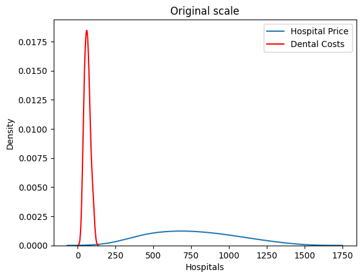
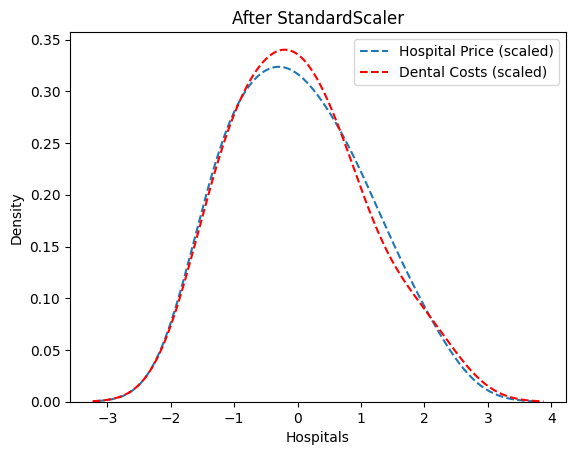
Hierarchal Clustering - Dendrogram
link = linkage(pmatrix, method="ward")
plt.figure(figsize=(10, 6))
dendrogram(link, labels=health['Year'].values, leaf_font_size=8)
plt.title("Ward dendrogram"); plt.tight_layout(); plt.show()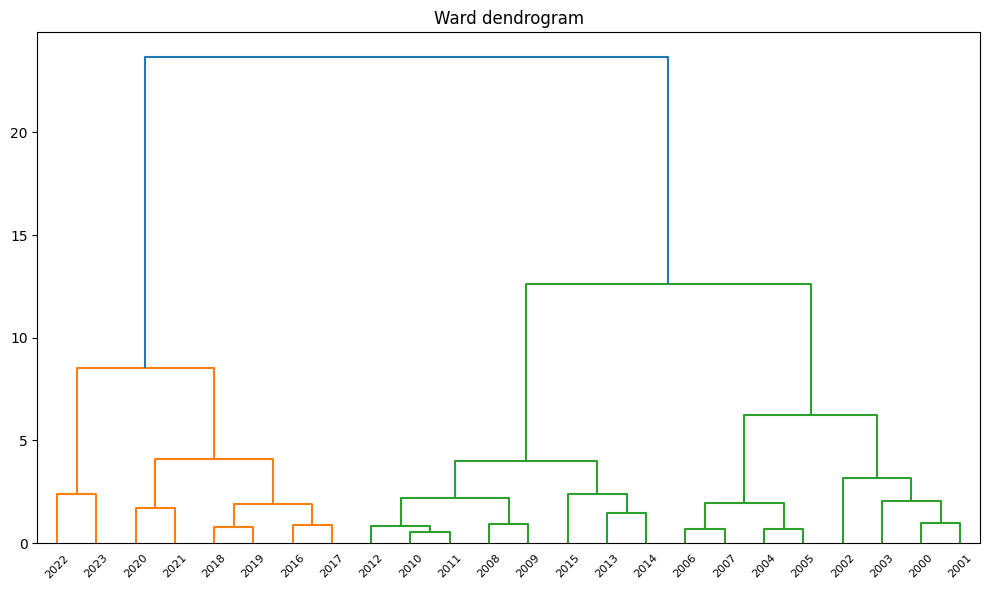
Hierarchal Clustering
groups_hc = fcluster(link, t=5, criterion="maxclust") # k = 5
# Convenience: print selected cols by cluster
def print_clusters(df: pd.DataFrame, labels, cols):
for k, sub in df.assign(cluster=labels).groupby("cluster"):
print(f"\nCluster {k} ({len(sub)} obs)")
print(sub[cols].to_string(index=False))
cols_to_print = ['Year', 'Dental', 'Physicians_and_Clinics', 'Hospitals']
print_clusters(health, groups_hc, cols_to_print)
Cluster 1 (2 obs)
Year Dental Physicians_and_Clinics Hospitals
2022 95.59 743.35 1203.19
2023 104.11 808.78 1322.83
Cluster 2 (6 obs)
Year Dental Physicians_and_Clinics Hospitals
2016 71.65 541.28 902.19
2017 74.80 568.58 937.10
2018 78.28 591.87 976.60
2019 81.38 620.50 1033.20
2020 74.94 629.99 1031.30
2021 90.40 687.53 1141.47
Cluster 3 (8 obs)
Year Dental Physicians_and_Clinics Hospitals
2008 53.79 377.30 629.74
2009 56.27 395.79 670.91
2010 59.15 406.21 698.73
2011 60.43 426.46 720.92
2012 61.45 443.14 755.51
2013 62.91 451.78 775.74
2014 65.98 480.03 810.39
2015 68.15 511.37 861.89
Cluster 4 (4 obs)
Year Dental Physicians_and_Clinics Hospitals
2004 44.62 297.83 489.33
2005 47.40 318.50 528.13
2006 48.27 337.57 563.33
2007 51.67 356.71 596.90
Cluster 5 (4 obs)
Year Dental Physicians_and_Clinics Hospitals
2000 32.91 216.79 355.56
2001 36.75 237.77 387.83
2002 39.81 259.84 421.26
2003 41.08 281.52 453.42PCA
groups_hc_limit = groups_hc[12:24]
health_limit = health.iloc[12:24]
pca = PCA(n_components=19).fit(pmatrix)
proj = pca.transform(pmatrix)[: :2]
proj_df = (
pd.DataFrame(proj, columns=[f"PC{i+1}" for i in range(19)])
.assign(cluster=groups_hc_limit.astype(int),
country=health_limit['Year'].values)
)
proj_df| PC1 | PC2 | PC3 | PC4 | PC5 | PC6 | PC7 | PC8 | PC9 | PC10 | ... | PC12 | PC13 | PC14 | PC15 | PC16 | PC17 | PC18 | PC19 | cluster | country | |
|---|---|---|---|---|---|---|---|---|---|---|---|---|---|---|---|---|---|---|---|---|---|
| 0 | -6.667066 | 0.063123 | -0.397139 | -0.445762 | -0.025937 | -0.250773 | -0.096611 | -0.044344 | -0.056657 | -0.021588 | ... | 0.011221 | -0.035710 | -0.011098 | 0.024847 | 0.004217 | 0.000002 | -6.717989e-06 | 1.474524e-06 | 3 | 2012 |
| 1 | -5.572609 | 2.940437 | 0.941744 | 0.075383 | -0.032793 | -0.024546 | 0.063208 | 0.083835 | 0.000734 | 0.020595 | ... | 0.023135 | 0.007300 | 0.010861 | 0.006530 | 0.000973 | -0.000002 | -5.102796e-07 | -2.609147e-06 | 3 | 2013 |
| 2 | -4.168596 | -0.961401 | -0.355936 | -0.314048 | 0.099399 | -0.017623 | 0.007812 | -0.042803 | 0.095647 | -0.011545 | ... | -0.028177 | 0.030325 | -0.008806 | -0.003858 | -0.008896 | -0.000007 | 1.306556e-05 | -2.088636e-06 | 3 | 2014 |
| 3 | -2.961976 | -0.310628 | 0.128367 | -0.083342 | 0.183194 | 0.308602 | 0.048456 | 0.034723 | -0.040366 | 0.020314 | ... | -0.026718 | -0.024944 | -0.014818 | -0.007998 | 0.013159 | -0.000009 | -1.033323e-06 | -2.218770e-06 | 3 | 2015 |
| 4 | -1.835688 | -1.062667 | 0.278598 | 0.035039 | 0.037106 | 0.158208 | -0.004390 | 0.032582 | -0.030992 | -0.007437 | ... | 0.032705 | -0.013211 | 0.020047 | -0.008043 | -0.005828 | -0.000010 | -4.420917e-06 | -1.360207e-06 | 2 | 2016 |
| 5 | -0.875711 | -0.949083 | 0.547280 | 0.310442 | -0.026586 | -0.084445 | 0.009296 | -0.063345 | 0.022743 | -0.018364 | ... | -0.016052 | 0.005911 | -0.007343 | 0.013824 | -0.004533 | 0.000028 | -3.112570e-06 | -2.354939e-06 | 2 | 2017 |
| 6 | -0.059103 | -0.704931 | 0.878051 | 0.369636 | -0.044133 | -0.181342 | -0.113867 | 0.066837 | 0.040370 | -0.003145 | ... | -0.046054 | -0.014591 | -0.007132 | -0.012328 | -0.005301 | -0.000022 | -1.086254e-05 | -1.559381e-06 | 2 | 2018 |
| 7 | 0.835132 | -0.337731 | -0.671212 | 0.220572 | -0.084806 | 0.185868 | 0.046072 | -0.022426 | -0.009791 | 0.018758 | ... | 0.042166 | 0.023497 | -0.038502 | 0.014067 | -0.008989 | 0.000010 | -9.693963e-06 | -1.225554e-06 | 2 | 2019 |
| 8 | 1.942238 | 1.169287 | -0.588189 | 0.241527 | -0.179613 | -0.078340 | 0.113922 | 0.037328 | 0.006225 | -0.029633 | ... | -0.027731 | 0.010395 | 0.004272 | 0.030328 | -0.000443 | -0.000015 | 4.609556e-06 | 9.986845e-07 | 2 | 2020 |
| 9 | 3.265397 | 0.981091 | -0.831870 | 0.093340 | 0.048835 | 0.025586 | -0.003694 | -0.075464 | 0.131530 | 0.024466 | ... | 0.022078 | -0.044660 | -0.012626 | -0.008037 | 0.006153 | -0.000029 | 1.228865e-06 | 8.588205e-07 | 2 | 2021 |
| 10 | 4.681662 | 0.625166 | -0.586550 | 0.233819 | 0.872082 | -0.103885 | -0.044932 | -0.014679 | -0.065078 | -0.024522 | ... | 0.004432 | 0.012117 | 0.006174 | 0.000443 | 0.000470 | 0.000003 | 1.528541e-06 | -8.843852e-07 | 1 | 2022 |
| 11 | 7.241354 | -0.273113 | 0.391305 | -0.461203 | 0.006399 | -0.065156 | -0.041004 | 0.025475 | 0.013004 | 0.111816 | ... | 0.017331 | -0.015002 | 0.014586 | 0.008783 | -0.011549 | 0.000012 | 3.093805e-06 | -1.324239e-06 | 1 | 2023 |
12 rows × 21 columns
# Compute PCA loading vectors
loadings_nba = pd.DataFrame(
pca.components_.T, # Transpose of PCA components to get loadings
index=vars_to_use, # Numeric columns used in PCA
columns=[f"PC{i}" for i in range(1, pca.n_components_ + 1)] # Name PCs as PC1, PC2, ...
)
# Print the first 3 loading vectors (for PC1, PC2, PC3)
print(loadings_nba.iloc[:, :3].round(2)) PC1 PC2 PC3
Year 0.24 0.02 -0.16
Average_Inflation_Rate -0.06 0.92 0.37
Hospitals 0.24 0.03 -0.03
Physicians_and_Clinics 0.24 0.05 -0.02
Dental 0.24 0.02 0.03
Non-Durable_Medical_Products 0.17 -0.36 0.87
Other_Professional_Services 0.24 0.05 0.08
Retail_Prescription_Drugs 0.24 -0.02 -0.03
Home_Health 0.24 0.01 -0.04
Nursing_Care 0.24 -0.06 -0.03
Other_Health_and_Residential 0.24 0.06 -0.02
Health_Consumption 0.24 0.03 -0.03
Personal_Health_Care 0.24 0.02 -0.02
Durable_Medical_Equipment 0.24 0.02 0.11
State_and_Local_Administration 0.24 0.00 0.03
Total_Administration 0.24 0.07 -0.12
Federal_Administration 0.24 0.07 -0.14
Net_Cost_of_Health_Insurance 0.24 0.07 -0.12
Total_National_Health_Expenditures 0.24 0.04 -0.03Scree Plot